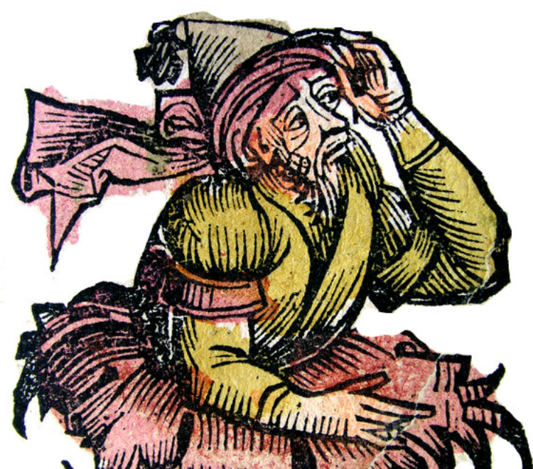
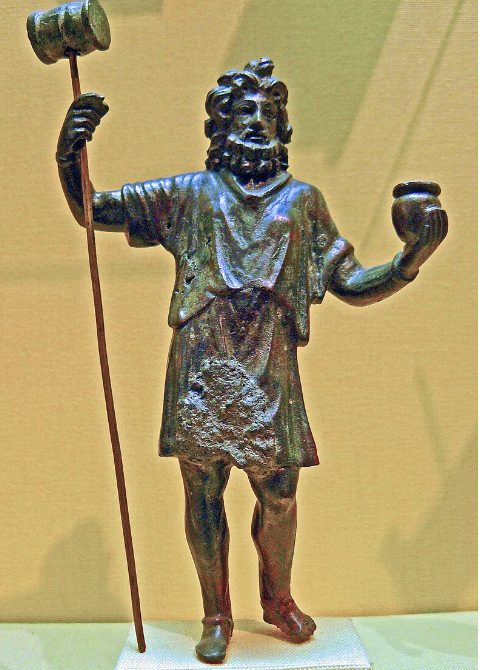
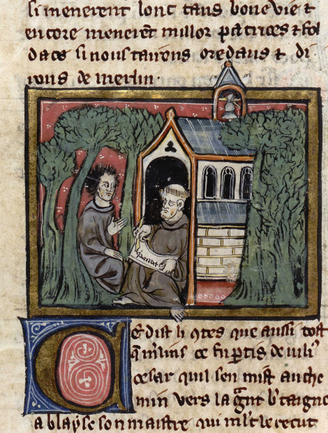
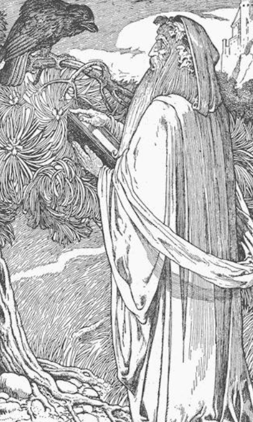
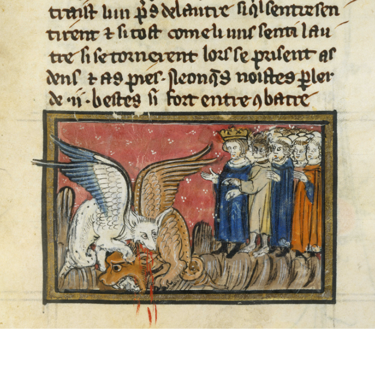

Introduction
I Le Merlin de la légende arthurienne
I.1 Deux strates littéraires
Introduction
I Le Merlin de la légende arthurienne
I.1 Deux strates littérairesTout comme son employeur le roi Arthur, Merlin est un personnage bien connu du grand public. Il lui est autant familier qu'il est mystérieux. Avec Arthur, il est passé du folklore médiéval à la pop culture contemporaine et du livre à l'écran. C'est même certainement au cinéma ou à la télévision que le public découvre le plus souvent ce personnage, sous la forme d'un vieillard à barbe blanche conseiller d'Arthur, ou sous celle d'un jeune sorcier en début de carrière, émule d'Harry Potter. Ces deux représentations tirent leur origine de deux strates différentes de la littérature médiévale dont nous sommes redevables au même auteur: Geoffroy de Monmouth.
I.2 L'"Histoire des rois de Bretagne"La carrière littéraire de Merlin commence vers 1135, lorsque un clerc et futur évêque gallois, peut-être d'origine normande ou bretonne, Geoffroy de Monmouth, publie en latin son premièr ouvrage: "Prophetiae Merlini". Ces "Prophéties de Merlin" sont une suite de 73 tableaux obscurs où Merlin décrit des événements dont certains avaient dèjà eu lieu du vivant de l'auteur. Celui-ci les incorporera deux ou trois ans plus tard dans un ouvrage qui connut un énorme succès: "Historia regum Britanniae", l'Histoire des Rois de Bretagne. Cette Histoire marque l'apparition d'une fiction, la "matière de Bretagne" qui s'organise autour de quelques figures mythiques, dont Arthur et Merlin.
I.3 Ambroise devient MerlinDans l'"Histoire des Rois de Bretagne", Merlin est d'abord un enfant sans père appelé à devenir un devin et un prophète, puis un magicien qui déplace Stonehenge et préside à la conception miraculeuse d'Arthur. Il tire ses traits, au moins en partie, de l'Ambrosius Aurelianus des proto-historiens Gildas, Bède le Vénérable et de l'auteur de l'"Historia Britonum" qui écrivirent respectivement vers 540, 731 et 826. Ledit auteur est généralement appelé Nennius. Il distingue deux personnages: Ambroise Aurélien, chef de guerre et Ambroise l'enfant-sans-père, le devin.
Dans cette "Histoire des Rois de Bretagne" le nom de "Merlinus" apparaît tout d'abord, au chapitre 106 (de la traduction de Laurence Mathey-Maille,"Les Belles Lettres, 1992), à propos de la "Tour de Vortigern" que ce roi s'évertuait à construire et qui, assuraient ses mages, cesserait de s'effondrer chaque nuit si l'on sacrifiait un enfant sans père et si l'on arrosait de son sang les pierres et le mortier de l'ouvrage maudit. Les émissaires partis à la recherche d'un tel enfant entendent une dispute entre deux garçons, Dinabut et Merlin ("quorum erant nomina Merlinus atque Dinabutius"), le premier reprochant au second de n'avoir pas de père. Quelques pages plus loin, Geoffroy nous apprend que "Merlin" s'appelait aussi "Ambroise" ("Merlinus qui et Ambrosius dicebatur"), ce qui autorise Geofffroy à imputer audit Merlin ce que les protohistoriens racontaient au sujet de l'enfant sans père Ambroise, le chef de guerre poursuivant sa carrière dans le récit sous le nom d'Ambroise Aurélien.
I.4 D'où vient le nom "Merlin"?C'est ici que se pose la question: d'où vient le nom de Merlin?
D'ailleurs ce nom latin, "Merlinus", apparaît dans un document ancien, les "Annales Cambriae". On date généralement l'original (version A) de cette liste d"événements, du 10ème siècle au plus tard. Cependant le membre de phrase qui contient ce nom ("Merlinus insanus effectus est") ne se trouve que dans une seule des 5 versions connues, la version B, qui prétend aller "depuis la création du monde jusqu'en 1286" ("ab orbe condito adusque AD 1286"). Cette mention pourrait donc être postérieure à l'"Histoire" de Geoffroy et lui avoir emprunté le nom de "Merlinus".
Cette remarque tend à prouver non seulement que le nom de Merlin circulait, mais encore qu'il existait à son sujet une tradition antérieure à Geoffroy, peut-être des contes oraux ou des écrits qui mentionnaient ce célèbre devin.
I.5 Merlin découvert à "Kaermerdin"Il apparaît que Geoffroy associait au nom de Merlin un autre nom qui avait cours dans la langue du pays de Galles: MYRDDIN. Au chapitre 106 où figure pour la première fois le nom de "Merlin", Geoffroy relie ce nom à celui de Carmarthen. Il signale expressément que l'enfant sans père fut découvert "dans la ville QUE L'ON APPELA DES LORS Kaermerdin" (quae postea Kaermerdin vocata fuit). Le fait mérite d'être souligné, car l''Historia Brittonum" (826) avait situé, quant à elle, la découverte d'Ambroise, non pas à Carmarthen, mais dans le royaume de Glamorgan, alors appelé Glywysing.
Cela suggère que Geoffroy avait entendu parler d'un prophète Myrddin dont le nom était le produit de l'étymologie fantaisiste du toponyme 'Kaermerdin', (à moins qu'il n"en soit l'origine) et qu'il rend tout d'abord ce nom sous la forme "Merdin". Ce n'est qu'une dizaine d'années plus tard, qu'ayant, peut-être, approfondi sa connaissance de cet autre "Merlin", en particulier par la lecture des poèmes attribués à Myrddin, il lui consacrera un autre ouvrage, la "Vita Merlini" qu'il essaiera tant bien que mal de raccorder à ses précédents écrits.
I.6 Fortune littéraire du Merlin de l'"Histoire"C'est le Merlin de l'"Histoire" qui eut la descendance littéraire la plus importante:
Puis ce sont au total 5 volumes qui constituent la "Vulgate" dont il existe encore 140 exemplaires plus ou moins complets. Si Merlin est totalement absent de l'oeuvre de Chrétien de Troyes (1130-1180), l'auteur arthurien par excellence, il n'est pas pour autant oublié des autres.
II Le Myrddin de la "Vie de Merlin"
II.1 La "Vie de Merlin" - Le Merlin du NordUne autre oeuvre de Geoffroy de Monmouth eut beaucoup moins de retentissement que son "Histoire des rois de Bretagne". Il s'agit de la "Vita Merlini", parue une douzaine d'années plus tard (vers 1150) qui nous présente un Merlin vieilli, "après que bien des ans et bien des rois furent venus et passés". La scène se déplace du Pays de Galles et du sud-ouest de l'Angleterre vers la Forêt de Calidon et le royaume de Cumbrie, à la frontière de l'Ecosse.
II.2 Myrddin, Rodarch, GaniedaMerlin était au service des princes de Dyfed en Galles du Sud en tant que principal astrologue et juriste. Lors d'une guerre entre le roi du Gwynedd (Galles du Nord) Peredur, allié de Rodarch, roi des Cumbriens d'une part et Guennolous, roi d'Ecosse d'autre part, les frères de Peredur périrent, tandis que Peredur et Rodarch massacraient leurs adversaires. Merlin fut témoin de ce carnage et perdit la raison: il se couvrit la tête de poussière, déchira ses vêtements en se roulant par terre, avant de s'enfoncer dans la forêt où il se nourritssait de baies et de racines comme un animal sauvage.
Ganiéda, la soeur de Merlin qui avait épousé le roi Rodarch envoya des messagers à sa recherche. L'un d'entre aux parvint à le faire sortir de sa cachette en évoquant, au son d'une guitare, le chagrin de Guendoloène, son épouse. Son retour fut salué par tant de joyeuses clameurs à la cour du roi, que Merlin, abasourdi, voulait retourner à la vie sauvage et que Rodarch dut le faire enchaîner.
En dévoilant au roi l'inconduite de son épouse qui avait provoqué son rire, Merlin obtint d'être relâché. Non sans avoir auparavant prédit trois fois la mort d'un jeune garçon - et chaque fois d'une façon différente: chûte d'un rocher, mort du fait d'un arbre, noyade dans une rivière. Cet apparent illogisme était censé réhabiliter Ganiéda aux yeux de son mari. Merlin repartit pour la forêt et sa prophétie se réalisa: le garçon tomba d'une falaise dans une rivière, il eut le pied pris dans les branchages d'un arbre, de sorte qu'il se noya.
II.3 L'ermite-prophète et le bardeDes années plus tard, l'homme sauvage sorti de la forêt de Calidon , chevauchant un cerf, pour empêcher le remariage de son épouse Guedoloène. Il arracha les ramures de sa monture et les jeta sur son rival qui tomba raide mort. Alors qu'il prenait la fuite pour rejoindre la forêt, il fut rattrapé au passage d'un gué et conduit auprès du roi et de son épouse Ganiéda.
Un compromis fut trouvé: on construisit à son intention un pavillon dans les bois où il trouverait de la nourriture pour l'hiver et des scribes pour consigner ses prophéties par écrit. Ces prophéties occupent plus d'une centaine de vers du poème: elles évoquent des guerres entre factions bretonnes ennemies telles que les Gallois et les Cornouaillais, la conquête de la (Grande) Bretagne par les Saxons, les raids des Vikings au 9ème siècle et la conquête normande de 1066. Elles enchaînent sur les prophéties de l'"Histoire des rois" faites à Vortigern.
Ganiéda est priée de faire venir au pavillon du bois le barde Taliesin (Telgesinus) "récemment rentré de (Petite) Bretagne où il avait bénéficié de l'enseignement du sage Gildas". L'entretien du barde et du prophète constitue un long interlude où se mélangent science et superstition. C'est ainsi qu'à côté de pays réels dont Ceylan (Taprobana), il est question de l'île des Pommes (Insula Pomorum) gouvernée par Morgane. C'est là , précise Taliesin, qu'a été transporté Arthur après avoir été blessé à la bataille de Camlan. L'envahissement de la Grande Bretagne par les Anglo-Saxons est alors raconté en détail, jusqu'à l'avénement de Conan qui, malgré ses défauts, règne toujours sur les Bretons.
D'autres longs entretiens avec Taliesin ont pour objet les vertus curatives de l'eau, sujet imposé par le jaillissement d'une source qui guérit la folie de Merlin; puis les oiseaux migrateurs... Un troisième Merlin fait son entrée en la personne de Maeldin, un soldat devenu fou après avoir mangé des pommes empoisonnées destinées au vrai Merlin. Il est guéri à son tour. Il décide de rester auprès de son mentor, tout comme Taliesin et Ganiéda qui manifeste, elle aussi, des talents de prophétesse et prédit le siège de Lincoln et autres malheurs provoqués par des envahisseurs normands. Et c'est ainsi que s'achève la "Vie de Merlin".
III Le Merlin breton
III.1 Le Merlin de l'"Histoire" ne procède pas de MyrddinLe Merlin de l'"Histoire des rois de Bretagne" n'est pas un clone de celui de la "Vita Merlini". Le second vit dans le nord de l'Ãle de Bretagne, le premier dans le sud et plus particulièrement dans le pays de Galles. Le roi Rodarch de la "Vita Merlini" est de toute évidence le Roderc du Rocher de Clyde (aujourd'hui château de Dumbarton, au nord de l'Angleterre) qui vécut dans les dernières années du 6ème siècle et dont parle la "Vita" de saint Columba, rédigée vers l'an 700.
Qui plus est, c'est aussi le Rhydderch de cinq poèmes gallois de Myrddin dont Geoffroy s'est inspiré de toute évidence pour sa "Vie de Merlin", mais non pour son "Histoire des rois". Dans ces textes gallois qui ont trait à la bataille d'Arfderydd, Merlin porte un nom gallois dont la forme normalisée est "Myrddin" et ce nom n'est pas un inconnu:
III.2 Myrddin et CambronneLes Poèmes de Myrddin étaient supposés être l'Åuvre d'un nommé Myrddin et ils contenaient un mélange de prophéties et d'autobiographie, l'auteur y prenant la parole à la première personne.
On a coutume d'affirmer que lorsqu'il rédigea ses "Prophéties", puis son "Histoire", Geoffroy connaissait déjà le nom de "Myrddin", mais qu'il l'a transformé en "Merlin" pour ne pas choquer les oreilles romanes. On peut penser au contraire qu'il tirait le nom de "Merlin" d'une tout autre source, peut-être du mystérieux livre breton, ou d'une tradition orale dont les contes de Basse Bretagne parvenus jusqu'à nous témoigneraient encore aujourd'hui.
III.3 Un Merlin des contes bretons?On peut même se demander si Myrddin n'évoque pas un personnage ayant réellement existé. Son histoire rappelle celle de Lailoken, un mystérieux "homme sauvage" qui aurait vécu au 6ème siècle dans les Basses Terres d'Ecosse. Son sort aurait été lié à celui de saint Kentigern de Glasgow, à celui de Rhydderch, roi de Dumbarton, comme on l'a dit et à des événements importants comme la bataille d'Arfderydd.
Si ce personnage solitaire, toujours en fuite, traumatisé par son expérience de la guerre, hôte des collines et des forêts de l'Ecosse du temps jadis avait existé, on pourrait risquer l'hypothèse que le peuple de Basse-Bretagne en a conservé le souvenir.
Les contes bretons cités ci-après nous parlent d'un Merlin, homme sauvage hantant les forêts, possédant des dons divinatoires, qu'un roi s'évertue à garder prisonnier dans une cage... Il ne doit pas grand chose au Merlin de la littérature arthurienne et beaucoup au Myrddin du nord de l'Angleterre, celui de la "Vita Merlini".
Le lecteur est invité à prendre connaissance de ces contes qui l'aideront peut-être à se faire une idée sur l'épineuse question des relations que ces différentes figures entretiennent entre elles. A défaut d'obtenir une réponse définitive, il découvrira un nouveau Merlin, le Merlin breton, tout aussi attachant que ses plus célèbres cousins.
Dans son "Myrdhinn ou l'Enchanteur Merlin" (1861), La Villemarqué distinguait cinq personnages portant le même nom: mythologique, historique, légendaire, poétique et romanesque.
Place à présent au Merlin des contes populaires bretons!
1. Liens entre tradition orale bretonne et littérature galloise ancienne
1.1 Capture de Merlin
Ha kanomp bremañ, drin, drelin
Paket eo Merlig, me gav din!
Chantons maintenant, drin, drelin.
Il est pris, Merlin, je crois bien!
Ce dicton de Haute-Cornouaille cité par Per-Jakez Hélias dans sa préface aux « Contes et poèmes celtiques » de Léon Fleuriot, J-C Lozac'hmeur et L. Prat en 1981 a pour thème un exploit qui revient de manière obsessionnelle dans la tradition orale bretonne : la capture de l'enchanteur Merlin.
Merlin, illustration tirée de la "Nürnberger Chronik"
1493, Hartmann Schedel (1440-1514)
Paket eo Merlig, me gav din!
Chantons maintenant, drin, drelin.
Il est pris, Merlin, je crois bien!
Ce dicton de Haute-Cornouaille cité par Per-Jakez Hélias dans sa préface aux « Contes et poèmes celtiques » de Léon Fleuriot, J-C Lozac'hmeur et L. Prat en 1981 a pour thème un exploit qui revient de manière obsessionnelle dans la tradition orale bretonne : la capture de l'enchanteur Merlin.

Merlin, illustration tirée de la "Nürnberger Chronik"
1493, Hartmann Schedel (1440-1514)
1.2 Poème du Barzhaz "Merlin le Barde"
Parmi les poèmes les plus importants du Barzhaz Breizh de La Villemarqué figure une longue chanson, Merlin-Barde racontant la capture par un jeune sorcier, aidé de sa grand-mère, de la harpe de Merlin, puis de l'anneau de Merlin, enfin de Merlin lui-même, puisque seul le célèbre sorcier était jugé digne de bénir le mariage du héros avec la fille du roi.
Dans cette chanson apparaissent certains liens entre la tradition orale bretonne et la littérature galloise ancienne. En particulier, les attributs du barde de la cour (bardd teulu) sont décrits par les lois de Hywel Dda de la fin du Xe siècle, comme suit :
"Il a droit à un bÅuf... Il est assis juste à côté de l'Intendant de la Maison du Roi. Il reçoit du prince (teyrn) une harpe et de la reine un anneau d'or et il ne doit jamais s'en séparer."
Ce sont les deux attributs du Barde Merlin de la ballade bretonne, dont le roi fait dépouiller leur détenteur. Ce fait fut constaté, dès 1839, par La Villemarqué lui-même qui citait les « Lois de Hoël-Da » selon un document jugé aujourd'hui médiocrement fiable, les « Myvyrian Archeologiae ».
Dans cette chanson apparaissent certains liens entre la tradition orale bretonne et la littérature galloise ancienne. En particulier, les attributs du barde de la cour (bardd teulu) sont décrits par les lois de Hywel Dda de la fin du Xe siècle, comme suit :
"Il a droit à un bÅuf... Il est assis juste à côté de l'Intendant de la Maison du Roi. Il reçoit du prince (teyrn) une harpe et de la reine un anneau d'or et il ne doit jamais s'en séparer."
Ce sont les deux attributs du Barde Merlin de la ballade bretonne, dont le roi fait dépouiller leur détenteur. Ce fait fut constaté, dès 1839, par La Villemarqué lui-même qui citait les « Lois de Hoël-Da » selon un document jugé aujourd'hui médiocrement fiable, les « Myvyrian Archeologiae ».
1.3 Les trois royaumes de Merlin dans le chant "Les Séries"
La douzaine de textes ci-dessous permettent dâexplorer plus avant cette correspondance. L'un d'entre eux est le conte populaire détaillé et complexe "Kontadenn Jozebig" qui mentionne les "trois royaumes de Merlin", une notion qui apparaît dans la littérature galloise ancienne, comme La Villemarqué le signale dans l'introduction au chant "Les Séries" dans le Barzhaz de 1845.
"Les trois royaumes de Merzin paraissent correspondre à la troisième sphère mythologique des traditions galloises, celle de la béatitude. Il est remarquable en effet, dâune part, que ces traditions donnent le nom de "tombeau de Merzin" [1] au triple royaume de Loégrie (lâAngleterre), de Cambrie (le pays de Galles) et dâAlban (lâÃcosse), qui forment lâÃle de Bretagne;
dâune autre, que les Armoricains du sixième siècle faisaient de cette même île le séjour des âmes bienheureuses [2].
Le Merzin, auquel sont soumis les trois royaumes célestes dont il est ici question, nâest, on le sent bien, ni le barde guerrier de ce nom, ni le devin qui nous occuperont plus tard : je serais porté à voir en lui le dieu que les Gaulois adoraient comme lâinventeur de tous les arts, comme le génie du trafic, et que César, trompé par une similitude de nom [2] et dâattributs, identifie avec le Mercurius romain."
[1]Â "Klaz Merzin". (Myvyrian, Archives of Wales, t. II, p. 2.)
[2] Procope, de Bello gothico, liber IV, CXX)
"Les trois royaumes de Merzin paraissent correspondre à la troisième sphère mythologique des traditions galloises, celle de la béatitude. Il est remarquable en effet,
[1]Â "Klaz Merzin". (Myvyrian, Archives of Wales, t. II, p. 2.)
[2] Procope, de Bello gothico, liber IV, CXX)
2. Thèse de F-M. Luzel
Que le Merlin breton puisse appartenir à une tradition spécifique dont l'Armorique hériterait au même titre que les Celtes de Grande Bretagne est un point de vue que Luzel ne partage pas. En 1871, il rédige un "2ème rapport sur une mission en Basse-Bretagne" adressé au Ministre de l'Instruction publique et destiné aux "Archives des missions scientifiques et littéraires", 2ème série, tome 7. Pages 126 et 127, il porte un verdict sans appel:
2.1 Les échanges avec l'extérieur dans les régions côtières (p.126)
2.2 L'influence de la culture littéraire des châtelains sur les paysans (p.127).
2.1 Les échanges avec l'extérieur dans les régions côtières (p.126)
"La région des montagnes est d'une pauvreté notable [concernant] la richesse en vieux chants et contes populaires, comparée avec [...] l'ancien évêché de Tréguier [...]
Je suis frappé des ressemblances nombreuses que les récits traditionnels du peuple breton présentent avec les productions analogues des Gallois, des Ecossais, des Irlandais, des Anglais, des Allemands, des Danois et des Slaves surtout. Il est vraisemblable que de ces traditions, les contes mythologiques principalement, peu sont nées sur le sol où nous les trouvons et que ce sont, pour la plupart, des importations datant ordinairement de très loin. Il est naturel que les populations des rivages [...] aient un plus riche trésor de ces traditions que les montagnards de la Cornouaille, isolée du reste du monde [...]"
Je suis frappé des ressemblances nombreuses que les récits traditionnels du peuple breton présentent avec les productions analogues des Gallois, des Ecossais, des Irlandais, des Anglais, des Allemands, des Danois et des Slaves surtout. Il est vraisemblable que de ces traditions, les contes mythologiques principalement, peu sont nées sur le sol où nous les trouvons et que ce sont, pour la plupart, des importations datant ordinairement de très loin. Il est naturel que les populations des rivages [...] aient un plus riche trésor de ces traditions que les montagnards de la Cornouaille, isolée du reste du monde [...]"
2.2 L'influence de la culture littéraire des châtelains sur les paysans (p.127).
"Quant aux chants populaires, j'ai encore remarqué que, chez nous, plus le pays est cultivé et riche, plus il s'y trouve de vieux châteaux et de manoirs nobles, plus on y chante aussi de gwerzioù et de sonioù. Or les vieux châteaux et les manoirs sont clairsemés en Cornouaille, tandis qu'ils sont très nombreux en Trégor [...]"
On a un peu de mal à suivre sa démonstration quand il écrit (p.133) que c'est à Plonevez-du-Faou qu'il entendit pour la première fois, sorti de la bouche d'un homme du peuple, le laboureur Jean Le Ny, un conte où il était question de Merlin.
Et qu'Ã Collorec, un charpentier, Jean Couchennec connaissait le conte de Merlig.
Ces deux localités voisines sont situées en plein cÅur de cette Cornouaille si indigente en traditions orales.
Il ne nous dit pas où il entendit le conte de la Santirine, dans lequel un avatar de Merlin rit et s'afflige apparemment à contretemps, comme le héros de la "Vita Merlini" de Geoffroy de Monmouth que l'on date d'environ 1150. Il évoque à ce sujet des romans français, Huon de Bordeaux, les Quatre fils Aymon et ajoute:
"Ces romans étaient lus dans les châteaux; et de là ils descendaient dans le peuple qui les arrangeait et les modifiait à sa guise [...] C'est sans doute de cette manière que le nom de Merlin s'est conservé dans les récits de nos paysans; dans la poésie je ne l'ai jamais rencontré."
A propos du "Capitaine Lixur", un conte où un satyre a le même comportement, il explique que cela doit "être un souvenir dâun épisode semblable du "Roman de Merlin", de Robert de Boron, poète du XII° siècle."
On peut penser qu'en 1870, Luzel, dans le cadre de la "querelle du Barzhaz Breizh" qui avait éclaté trois ans plus tôt, prenait systématiquement, sans nommer ouvertement qui il visait, le contrepied des théories antiquisantes de La Villemarqué, lequel considérait la Haute-Cornouaille comme le sanctuaire où s'étaient le mieux conservées les traditions les plus anciennes.
On a un peu de mal à suivre sa démonstration quand il écrit (p.133) que c'est à Plonevez-du-Faou qu'il entendit pour la première fois, sorti de la bouche d'un homme du peuple, le laboureur Jean Le Ny, un conte où il était question de Merlin.
Et qu'Ã Collorec, un charpentier, Jean Couchennec connaissait le conte de Merlig.
Ces deux localités voisines sont situées en plein cÅur de cette Cornouaille si indigente en traditions orales.
Il ne nous dit pas où il entendit le conte de la Santirine, dans lequel un avatar de Merlin rit et s'afflige apparemment à contretemps, comme le héros de la "Vita Merlini" de Geoffroy de Monmouth que l'on date d'environ 1150. Il évoque à ce sujet des romans français, Huon de Bordeaux, les Quatre fils Aymon et ajoute:
"Ces romans étaient lus dans les châteaux; et de là ils descendaient dans le peuple qui les arrangeait et les modifiait à sa guise [...] C'est sans doute de cette manière que le nom de Merlin s'est conservé dans les récits de nos paysans; dans la poésie je ne l'ai jamais rencontré."
A propos du "Capitaine Lixur", un conte où un satyre a le même comportement, il explique que cela doit "être un souvenir dâun épisode semblable du "Roman de Merlin", de Robert de Boron, poète du XII° siècle."
On peut penser qu'en 1870, Luzel, dans le cadre de la "querelle du Barzhaz Breizh" qui avait éclaté trois ans plus tôt, prenait systématiquement, sans nommer ouvertement qui il visait, le contrepied des théories antiquisantes de La Villemarqué, lequel considérait la Haute-Cornouaille comme le sanctuaire où s'étaient le mieux conservées les traditions les plus anciennes.
3. La thèse opposée de Sherman Loomis
3.1 Bretons du XIIème s. et légendes arthuriennes.
Dans un article intitulé "Le Folklore breton et les romans arthuriens", paru dans "Annales de Bretagne et des pays de l'Ouest", 56-2, pp. 203-227, en 1949, le médiéviste américain Roger Sherman Loomis, (1887-1966), prenait le contrepied de la thèse de Luzel selon laquelle, "on ne trouve le nom d'aucun des héros de la Table Ronde dans la bouche de nos conteurs populaires, pas plus dans la Basse que dans la Haute Bretagne, pas même le nom d'Arthur, et qu'on ne rencontre aussi aucun souvenir des aventures et des exploits qui, quoique imaginaires presque tous, les rendaient fameux.".
Sherman Loomis est d'avis qu'obsédé par le désir de rejeter les doctrines de La Villemarqué et ne disposant pas d'une suffisante connaissance des romans arthuriens, Luzel n'a pas reconnu les concordances significatives entre traditions médiévales et tradition orale moderne.
Ce rôle a été reconnu par divers auteurs: l'Abbé de La Rue, ("Essais historiques sur les bardes, les jongleurs et les trouvères", Caen, 1834), Gaston Paris ("Littérature française au moyen âge", Paris, 1909 qui, reprenant les témoignages concordants de la sculpture de Modène, de Guillaume de Malmesbury, de Wace, de Giraud de Cambrais, assurent que la propagation étonnante du cycle arthurien était due, avant tout, aux conteurs professionnels bretons.
Et Loomis demande "Comment les récits qu'ils avaient rendu célèbres au XIIème s.n'auraient-ils pas laissé de traces dans leur patrie ?" Il donne plusieurs exemples de cette filiation:
Sherman Loomis est d'avis qu'obsédé par le désir de rejeter les doctrines de La Villemarqué et ne disposant pas d'une suffisante connaissance des romans arthuriens, Luzel n'a pas reconnu les concordances significatives entre traditions médiévales et tradition orale moderne.
Ce rôle a été reconnu par divers auteurs: l'Abbé de La Rue, ("Essais historiques sur les bardes, les jongleurs et les trouvères", Caen, 1834), Gaston Paris ("Littérature française au moyen âge", Paris, 1909 qui, reprenant les témoignages concordants de la sculpture de Modène, de Guillaume de Malmesbury, de Wace, de Giraud de Cambrais, assurent que la propagation étonnante du cycle arthurien était due, avant tout, aux conteurs professionnels bretons.
Et Loomis demande "Comment les récits qu'ils avaient rendu célèbres au XIIème s.n'auraient-ils pas laissé de traces dans leur patrie ?" Il donne plusieurs exemples de cette filiation:
3.2 Trois motifs de Tristan.
3.2.1 Oreilles de cheval
La légende classique du roi Midas aux oreilles de cheval a dû parvenir sur le sol celtique et se rattacher au roi Marc parce que son nom voulait dire cheval. Elle a été consevée par les paysans bretons aussi tard que 1800.
3.2.2 Le tueur de dragon
3.2.3 Voiles noire et blanche
3.3 Marie Morgane et la littérature médiévale.
P. Sébillot et E. Souvestre à l'étang du Duc près de Vannes ont recueilli les éléments d'une autre tradition: celle de la Morgane, une sirène qui possède sous la mer des palais merveilleux où brillent l'or et les diamants. "Au clair de lune, elle se lamente en peignant sa chevelure blonde d'un peigne d'or fin, et elle chante d'une voix harmonieuse une mélodie plaintive, dont le charme est irrésistible. Le marin qui l'écoute se sent tiré à elle... Mais les bras de la fée n'embrassent qu'un mort et c'est cela qui occasionne le désespoir de la Morgan amoureuse et inviolable." (M. Cuillandre à Molène vers 1900, "Annales de Bretagne", XXXV ,1921-1923, p.634).
Les traits constants des Morganes du folklore breton, leurs habitations aquatiques, et leurs tendances amoureuses polyandriques sont ceux de Morgain la Fée dans la littérature médiévale de la matière de Bretagne: Geoffroy de Monmouth et Ãtienne de Rouen la qualifient de « nymphe », le poème «Floriant et Florèle »en fait une des « trois fées de la mer salée », Hartmann von Aue en fait un être amphibie etle roman provençal de « Jaufré » raconte comment ce héros fut entraîné dans les eaux par la « fada del Gibel »; On ne compte plus les amants de la Morgain de la littérature: Guiomar, Floriant, Ogier le Danois, Renoart, Breus (Floriant et Florèle), Lancelot, Alisandre l'Orphelin, Tristan et Hector de Troyes.
3.4 Autres correspondances.
Loomis continue sa démonstration en invoquant d'autres éléments de contes populaires ayant des correpondances dans la littérature arthurienne:
3.4.1 L'arbre illuminé
L'arbre illuminé, cité dans le conte de Perceval chez Wauchier de Denain et dans la « Continuation » de Manessier, est un phénomène électrique : le « feu Saint-Elme » qui a également inspiré les fantaisies des Bretons continentaux du moyen âge à aujourd'hui.
3.4.2 La fontaine de Barenton
La fontaine de Barenton (cf. le Royaume périlleux de Michel Galiana) qui produit des orages effrayants quand on verse de l'eau sur sa margelle est mentionnée dans l'Yvain de Chrétien de Troyes et dans le Roman de Rou de Wace (1160-74). Nous avons en outre le témoignage irréfutable d'une série d'auteurs médiévaux sur cet usage: Giraud de Cambrais, Guillaume le Breton, Thomas de Cantimpré, et un document de l'an 1467 décrivant les coutumes de la forêt de Brocéliande. En 1835 après une sécheresse prolongée un curé de Concoret a conduit une procession à la source, a plongé un aspersoir dans l'eau, et a arrosé le perron (H. de La Villemarqué, Romans de la Table Ronde, 3e éd. Paris. 1860, p. 235. Contes Populaires des Anciens Bretons, tome I, p. 322-323, Paris, 1842).
Loomis exclut que ce soit le poème de Chrétien qui ait créé cet usage rustique. il ajoute: "Fréquemment dans l'histoire de la littérature on trouve un Théocrite, un Virgile, un Shakespeare, un Thomas Hardy, empruntant ses matériaux aux choses observées parmi les paysans. Jamais, si je ne me trompe, le génie littéraire n'imagine un rite, une pratique, et ne réussit à l'imposer aux gens de la campagne qui ne lisent point. Une fois de plus, donc, nous trouvons une légende bretonne, enfouie dans un roman du 12e siècle, qui a survécu indépendamment jusqu'au 19e siècle -parmi les campagnards."
3.4.3 L'île aux orangers, le cimetière périlleux
Loomis cite encore à l'appui de sa démonstration l'île aux orangers du roman Erec de Chrétien de Troyes, le cimetière périlleux des romans de Perlevaux et du Chevalier aux Deux Ãpées qui ont leurs pendants chez les conteurs du 19ème siècle.
3.4.4 Le bassin magique
Il se penche en particulier sur le cas d'un conte en prose tiré du "Foyer breton" d'Emile Souvestre (Paris, 1864), pp. 137-70, "Le Bassin magique". Le héros, Perronik est un idiot qui sert comme pâtre chez une fermière. Il voit passer plusieurs chevaliers en quête d'un bassin d'or, sorte de corne d'abondance qui ressuscite les morts et d'une lance de diamant qui tue et brise tout ce qu'elle touche. Un jour Perronik se met en route et réussit à surmonter bien des périls: des arbres qui s'enflamment, un nain dont l' épée de feu réduit tout en cendres, un lac aux dragons et un vallon gardé par un homme noir. Aidé d'une Mauresque qu'il prend en croupe il pénètre dans le château du géant qui possède les trésors qu'il convoite. Il s'empare du bassin et de la lance. Puis il conquiert la France et devient empereur des Sarrasins.
Ce simple d'esprit tient à la fois de Perceval et les épreuves qui lui sont imposées sont celles que surmonte le Peredur gallois. Dans une liste galloise du XVe siècle, avec le vaisseau "dysl"« le mets quelconque qu'on désirait, on l'obtenait tout de suite ». Quant à l'épée de Rhydderch, « quiconque la tirait du fourreau, sauf son propriétaire, elle se transformait en flamme dans sa main (Edward Jones, Bardic Museum (London, 1802), p. 48).
Un examen approfondi conduit cependant Loomis à conclure à l'origine purement livresque de ce conte dont les éléments principaux sont tirés d'un ouvrage de La Villemarqué, « Les Contes populaires des anciens Bretons » (1842). Bien que le "bassin d'or" ne se rencontre ni dans Perceval, ni dans Peredur, La Villemarqué utilise le mot "bassin" pour traduire "graal" et "chaudron" dans son résumé du poème français du Graal (Romans de la Table Ronde, 1860, p. 136. Contes populaires 1842, tome I, p. 184).
Souvestre a pu trouver chez cet auteur le pouvoir du bassin de ressusciter les morts, la grotte où il était déposé, les diverses épreuves dont le héros triomphe...
"Mais", ajoute Loomis, "cette conclusion ne doit pas diminuer notre confiance dans les autres auteurs cités dans cette étude : Luzel, Sébillot, et Cuillandre...La liste des analogies significatives entre contes populaires bretons et romans de la Table Ronde est assez longue pour démontrer qu'outre les nombreux éléments irlandais et gallois que la science nous a conduits à reconnaître, la « Petite Bretagne » a produit quelques-uns des éléments les plus substantiels et les plus frappants de la « matière de Bretagne. "
3.4.1 L'arbre illuminé
3.4.2 La fontaine de Barenton
Loomis exclut que ce soit le poème de Chrétien qui ait créé cet usage rustique. il ajoute: "Fréquemment dans l'histoire de la littérature on trouve un Théocrite, un Virgile, un Shakespeare, un Thomas Hardy, empruntant ses matériaux aux choses observées parmi les paysans. Jamais, si je ne me trompe, le génie littéraire n'imagine un rite, une pratique, et ne réussit à l'imposer aux gens de la campagne qui ne lisent point. Une fois de plus, donc, nous trouvons une légende bretonne, enfouie dans un roman du 12e siècle, qui a survécu indépendamment jusqu'au 19e siècle -parmi les campagnards."
3.4.3 L'île aux orangers, le cimetière périlleux
3.4.4 Le bassin magique
Ce simple d'esprit tient à la fois de Perceval et les épreuves qui lui sont imposées sont celles que surmonte le Peredur gallois. Dans une liste galloise du XVe siècle, avec le vaisseau "dysl"« le mets quelconque qu'on désirait, on l'obtenait tout de suite ». Quant à l'épée de Rhydderch, « quiconque la tirait du fourreau, sauf son propriétaire, elle se transformait en flamme dans sa main (Edward Jones, Bardic Museum (London, 1802), p. 48).
Un examen approfondi conduit cependant Loomis à conclure à l'origine purement livresque de ce conte dont les éléments principaux sont tirés d'un ouvrage de La Villemarqué, « Les Contes populaires des anciens Bretons » (1842). Bien que le "bassin d'or" ne se rencontre ni dans Perceval, ni dans Peredur, La Villemarqué utilise le mot "bassin" pour traduire "graal" et "chaudron" dans son résumé du poème français du Graal (Romans de la Table Ronde, 1860, p. 136. Contes populaires 1842, tome I, p. 184).
Souvestre a pu trouver chez cet auteur le pouvoir du bassin de ressusciter les morts, la grotte où il était déposé, les diverses épreuves dont le héros triomphe...
"Mais", ajoute Loomis, "cette conclusion ne doit pas diminuer notre confiance dans les autres auteurs cités dans cette étude : Luzel, Sébillot, et Cuillandre...La liste des analogies significatives entre contes populaires bretons et romans de la Table Ronde est assez longue pour démontrer qu'outre les nombreux éléments irlandais et gallois que la science nous a conduits à reconnaître, la « Petite Bretagne » a produit quelques-uns des éléments les plus substantiels et les plus frappants de la « matière de Bretagne. "
4. Une saga distincte du corpus insulaire
4.1 Tradition antérieure à Geoffrey
On rappellera ici brièvement ce qui a été exposé en introduction.
Le Merlin de la littérature procède des deux ouvrages de Geoffroy de Monmouth: l'"Historia Regum britanniae" et la "Vita Merlini", écrite une vingtaine d'années plus tard.
Dans le premier, Merlin de Carmarthen (en gallois: Caerfyrddin, "Ville de Myrddin") est assimilé au jeune prophète Ambroise (gallois: Emrys) de Glywysing (Glamorgan) dont parle l'"Historia Brittonum", un ouvrage rédigé au Pays de Galles au 9ème siècle. Geoffroy établit un lien entre Ambroise-Merlin et Arthur dont le nom est cité pour la première fois dans l'"Histoire des Bretons", indépendamment de celui d'Ambroise.
Dans le second, on nous présente un Merlin âgé, dont le sombre destin a pour décor la Cumbrie et la forêt de Calidon, des régions situées au sud de l'Ecosse.
Au début du §109 de « l'Histoire des rois de Bretagne », Geoffroy évoque le « bruit qui a été fait autour du nom de Merlin » et il est significatif que Laurence Mathey-Maille qui traduit et commente ce texte dans le recueil « La roue aux livres » (1992) note à ce sujet :
« Cette remarque tendrait à prouver l'existence, à propos du personnage de Merlin, d'une tradition antérieure à Geoffroy. Peut-être des contes oraux ou écrits circulaient-ils alors, qui évoquaient ce célèbre devin." (note 60, p.295).
Le Merlin de la littérature procède des deux ouvrages de Geoffroy de Monmouth: l'"Historia Regum britanniae" et la "Vita Merlini", écrite une vingtaine d'années plus tard.
Dans le premier, Merlin de Carmarthen (en gallois: Caerfyrddin, "Ville de Myrddin") est assimilé au jeune prophète Ambroise (gallois: Emrys) de Glywysing (Glamorgan) dont parle l'"Historia Brittonum", un ouvrage rédigé au Pays de Galles au 9ème siècle. Geoffroy établit un lien entre Ambroise-Merlin et Arthur dont le nom est cité pour la première fois dans l'"Histoire des Bretons", indépendamment de celui d'Ambroise.
Dans le second, on nous présente un Merlin âgé, dont le sombre destin a pour décor la Cumbrie et la forêt de Calidon, des régions situées au sud de l'Ecosse.
Au début du §109 de « l'Histoire des rois de Bretagne », Geoffroy évoque le « bruit qui a été fait autour du nom de Merlin » et il est significatif que Laurence Mathey-Maille qui traduit et commente ce texte dans le recueil « La roue aux livres » (1992) note à ce sujet :
« Cette remarque tendrait à prouver l'existence, à propos du personnage de Merlin, d'une tradition antérieure à Geoffroy. Peut-être des contes oraux ou écrits circulaient-ils alors, qui évoquaient ce célèbre devin." (note 60, p.295).
4.2 Les thèmes de la capture par un androgyne et de la délivrance par un enfant
La capture de l'homme sauvage doué d'omniscience et d'ubiquité est au centre des différents récits relatifs au Merlin breton. C'est le plus souvent une fille déguisée en homme qui accomplit cet exploit en attirant dans une cage la victime transie de froid et affamée, par un feu et de la nourriture en abondance. C'est souvent son propre fils qui libère le prisonnier. En contrepartie Merlin aide le jeune héros dans un parcours initiatique parsemé d'embuches...
Ces narrations bretonnes qui semblent ne rien devoir à Geoffroy et ses épigones littéraires ne seraient-elles pas la tradition dont Mme Mathey-Maille a l'intuition?
Elles autorisent à se distancer de l'attitude de Luzel, tout empreinte de ce positivisme soupçonneux qui le conduit à jeter le discrédit sur les plus belles pièces de la collection de Penguern: La vieille Ahès, les Loups de la mer..., pour ne rien dire de celles du Barzhaz: le Faucon, le Cygne, etc., collectées dans cette région qu'il considère comme particulièrement pauvre en traditions orales.
C'est ce que fait Jef Philippe, en 1986, l'éditeur des contes "Jozébig" et de "Margodig an Dour Yen" ci-après, qui n'hésite pas à faire des rapprochements entre ces contes et la mythologie celtique, telle qu'on peut l'appréhender à travers la littérature ancienne irlandaise et galloise.
Ces narrations bretonnes qui semblent ne rien devoir à Geoffroy et ses épigones littéraires ne seraient-elles pas la tradition dont Mme Mathey-Maille a l'intuition?
Elles autorisent à se distancer de l'attitude de Luzel, tout empreinte de ce positivisme soupçonneux qui le conduit à jeter le discrédit sur les plus belles pièces de la collection de Penguern: La vieille Ahès, les Loups de la mer..., pour ne rien dire de celles du Barzhaz: le Faucon, le Cygne, etc., collectées dans cette région qu'il considère comme particulièrement pauvre en traditions orales.
C'est ce que fait Jef Philippe, en 1986, l'éditeur des contes "Jozébig" et de "Margodig an Dour Yen" ci-après, qui n'hésite pas à faire des rapprochements entre ces contes et la mythologie celtique, telle qu'on peut l'appréhender à travers la littérature ancienne irlandaise et galloise.
5. Mythologie celtique
5.1 Le Dagda
C'est ainsi que Jef Philippe propose
"de voir en Merlin un avatar du dieu celte Dagda, le «Bon dieu», le dieu-druide, maître des éléments, des sciences, de l'amitié, guerrier et mangeur vorace s'il en fût!
Le Daga possède un chaudron magique et un maillet qui tue d'un côté et qui ressuscite de l'autre. Le dieu gaulois Sucellos est représenté muni d'ustensiles semblables. Et, de fait, dans le conte Jozébig (§ XI) on rencontre aussi un marteau qui peut faire des miracles avec ses deux extrémités (ériger des palais d'or ou d'argent), mais c'est avec une bombarde que Jozébig ramène les morts à la vie: ce qui est pour le moins agir à la mode de Bretagne!
L'illustration en haut de page montre une des plaques dont est constitué le "Chaudron de Gundestrup" dont le décor est au moins en partie d'inspiration celtique. On y voit ce qu'on croit être un dieu plongeant dans un chaudron de résurrection des fantassins qui deviennent des cavaliers. Un tel chaudron dispense l'inspiration poétique dans un sublime poème gallois Les Dépouilles de l'au-delà .
Statuette en bronze de Sucellos, dieu gaulois (15 cm)
Sauvat, Bouches-du-Rhône, 2 ou 3ème siècle ap. J.C.
M.A.N. St-Germain-en-Laye - Inv. n° 87371
"de voir en Merlin un avatar du dieu celte Dagda, le «Bon dieu», le dieu-druide, maître des éléments, des sciences, de l'amitié, guerrier et mangeur vorace s'il en fût!
Le Daga possède un chaudron magique et un maillet qui tue d'un côté et qui ressuscite de l'autre. Le dieu gaulois Sucellos est représenté muni d'ustensiles semblables. Et, de fait, dans le conte Jozébig (§ XI) on rencontre aussi un marteau qui peut faire des miracles avec ses deux extrémités (ériger des palais d'or ou d'argent), mais c'est avec une bombarde que Jozébig ramène les morts à la vie: ce qui est pour le moins agir à la mode de Bretagne!
L'illustration en haut de page montre une des plaques dont est constitué le "Chaudron de Gundestrup" dont le décor est au moins en partie d'inspiration celtique. On y voit ce qu'on croit être un dieu plongeant dans un chaudron de résurrection des fantassins qui deviennent des cavaliers. Un tel chaudron dispense l'inspiration poétique dans un sublime poème gallois Les Dépouilles de l'au-delà .

Statuette en bronze de Sucellos, dieu gaulois (15 cm)
Sauvat, Bouches-du-Rhône, 2 ou 3ème siècle ap. J.C.
M.A.N. St-Germain-en-Laye - Inv. n° 87371
5.2 Les trois royaumes des contes
Un fin connaisseur de la "Matière de Bretagne", Jérémy Loysance, à qui ce site doit tant de précieuses informations, est d'avis que les trois Royaumes des oies, des canards et des fourmis évoqués dans deux contes ("Jozébig" et le "Chevalier du Kergoat") pourraient être une évocation des éléments distingués par Empédocle, au 5ème siècle avant notre ère. Cette hypothèse est corroborée par le fait que dans l'épilogue de Jozébig, le héros convoque non pas trois, mais quatre rois en actionnant quatre sifflets à la fois: le roi qui préside au feu n'est autre que Merlin.
5.3 La poursuite et le boiteux
Dans "Margot l'eau froide" (un prénom qui n'apparaît nulle part dans le récit), le rapprochement avec "Hanes Taliesin" (Histoire de Taliésin, texte gallois du 16ème siècle) s'impose, au point que le très sceptique Luzel lui-même ne peut s'empêcher de le signaler à propos d'un conte similaire, Koadalan: la "poursuite de Gwion par Keridwen" préfigure les métamorphoses que les deux jeunes gens du conte breton mettent en Åuvre pour échapper à leur poursuivant.
Jef Philippe signale enfin
"le fait que le garçon était le «fils BOITEUX du roi» (dans «Hanes Taliesin» le héros Afangddu était le «plus vilain bonhomme au monde»). Pour être aimé et désigné comme roi à son tour, il lui fallait être débarrassé de son infirmité, ou, si l'on veut, anobli, épuré.
Bien entendu, ces détails remarquables ne doivent pas faire oublier qu'à côté d'éléments qui évoquent le souvenir populaire d'un genre de «bon sorcier» et d'un «homme sauvage», assez semblable à Merlin, ces récits regorgent d'interférences et d'emprunts à d'autres contes qui brouillent les "traces du Merlin breton" (roudoù Merlin e Breizh). C'est d'ailleurs le contraire qui serait étonnant!
C'est ainsi que le serpent à sept têtes qui hante plusieurs de ces contes, rappelle inmanquablement les travaux d'Hercule de la mythologie gréco-latine.
Jef Philippe signale enfin
"le fait que le garçon était le «fils BOITEUX du roi» (dans «Hanes Taliesin» le héros Afangddu était le «plus vilain bonhomme au monde»). Pour être aimé et désigné comme roi à son tour, il lui fallait être débarrassé de son infirmité, ou, si l'on veut, anobli, épuré.
Bien entendu, ces détails remarquables ne doivent pas faire oublier qu'à côté d'éléments qui évoquent le souvenir populaire d'un genre de «bon sorcier» et d'un «homme sauvage», assez semblable à Merlin, ces récits regorgent d'interférences et d'emprunts à d'autres contes qui brouillent les "traces du Merlin breton" (roudoù Merlin e Breizh). C'est d'ailleurs le contraire qui serait étonnant!
C'est ainsi que le serpent à sept têtes qui hante plusieurs de ces contes, rappelle inmanquablement les travaux d'Hercule de la mythologie gréco-latine.
5.4 Merlin l'homme-oiseau
Une dernière remarque: Assigner à l'homme sauvage armoricain une ancienneté au moins égale à celle des écrits de Geoffroy de Monmouth et supposer que celui-ci le connaissait sous le nom de "Merlin", permet d'éviter la peu vraisemblable hypothèse, défendue par le médiéviste Gaston Paris, d'une transformation par cet auteur d'un hypothétique "Merdinus" (équivalent du gallois "Myrddin") en "Merlinus", pour ne pas choquer les oreilles sensibles!
Jérémy Loysance suggère en outre que le lien de Merlin avec les oiseaux pourrait être le reflet de la généalogie divine évoquée plus haut. Plusieurs dieux que connaît la littérature celte se transforment en oiseaux.
Ce qui est indubitable, c'est le lien qui existe entre le Merlin des contes et le roitelet de la chanson d'enfant. L'interférence entre la saga bretonne de Merlin et le rite printanier de capture d'un roitelet est envisagée à une échelle européenne sur le site de Cattia Salto.
On y apprend que la "chasse au roitelet" est un rite panceltique particulièrement en honneur dans le sud-ouest de l'Irlande. Le roitelet y serait le symbole de Lug, fils de la lumière triomphante et son sacrifice, lors du solstice d'hiver, un tribut sanglant, tant propitiatoire à l'adresse des esprits chtoniens, que bénéfique pour le soleil printanier, censé tirer un regain d'énergie du sang versé de son oiseau-emblème. La mort du roitelet et le partage de ses plumes étaient gages de santé et de bonheur pour les paysans. Aujourd'hui encore les "Hommes-roitelets" (Wren-boys), vêtus de haillons et le visage peint ou masqué, vont de maison en maison, chantant la chanson du roitelet, accompagnés par des instruments traditionnels divers.
Dans son "Rameau d'or" (inventaire planétaire des mythes et rites en 12 volumes), l'anthropologue écossais James George Frazer (1854-1941) mentionne le fait que, bien que cette tradition ait aujourd'hui disparu des campagnes françaises, au 19ème siècle encore, celui qui parvenait à attraper le premier un roitelet était nommé "roi". La chanson bretonne "Marv al laouenan" (Mort du roitelet) apparaît dès lors, non pas comme une chanson enfantine, mais comme un chant rituel. Et on explique ainsi du même coup le nom français inattendu de cet oiseau.
On a vu plus haut que Jef Philippe propose de rapprocher le Merlin du conte "Jozébig" du dieu Dagda. Yann Brékilien (pseudonyme du magistrat Jean Sicart, 1920-2009) quant à lui, pensait qu'on avait ressuscité le dieu Cernunnos (aux ramures de cerf) en Merlin l'Enchanteur, "hybride de druidisme et de christianime" ("Mythologie celtique, p. 117). Les dieux de la mythologie classique avaient comme leurs collègues celtes des tâches réparties parfois de façon inattendue ou redondante comme dans ce poème de M. Galiana qui rappelle que c'est Hermès et non Apollon qui avait inventé la lyre. Le dieu Lug (sans doute le "Mercure" dont parle César) est d'ailleurs clairement désigné dans les textes comme ayant tous les talents.
On remarquera en passant que, pas plus dans les contes bretons que dans les documents exploités par La Villemarqué, l'homme sauvage ne s'appelle "Marzhin"!
Les contes populaires bretons n'expliquent pas le nom d'oiseau que porte ce personnage: soit celui du merle, soit celui de l'émerillon, toujours en usage en anglais. On notera cependant que le lit de fer où Merlin est pris ressemble, à la rigueur, à une cage à oiseaux. Et que, détail qui revient de façon assez régulière dans les diverses narrations, pour endormir ses soupçons lors de sa capture, le chasseur fait s'envoler des oiseaux d'un arbre...
Par ailleurs, la littérature ancienne semble établir ce lien. Le Perceval des manuscrits de Modène et Didot ainsi que le "Méraugis de Port-Lesguez" de Raoul de Haudenc (1170-1230) évoquent l'"esplumoir" de Merlin, dans lequel on peut voir le lieu où lâOiseau merveilleux perd ses plumes et effectue sa mue.
Il convient cependant de citer ici l'article "Merlin" du site "Etymonline" (anglais) qui assigne une date bien plus récente à l'apparition écrite du mot "Merlin":
Espèce européenne de faucon robuste et de petite taille, fin du 14e s., "merlioun" (peut-être début du 14e s.), de l'anglo-français ( Anglo-French) "merilun", une forme abrégée de l'ancien français "esmerillon" "merlin, petit faucon" (12e s., français moderne "émerillon"), du franc "*smiril" ou d'une autre source germanique (comparez le vieux haut allemand "smerlo", et l'allemand "Schmerl"). L'espagnol "esmerejon", l'italien "smeriglio" sont également des mots empruntés au germanique.
L'Oxford English dictionary écarte tout lien avec le latin merula « merle ».
Les dictionnaires français que j'ai consultés ne connaissent pas ce sens du mot "merlin" que la référence à l'"esplumoir" semble impliquer.
Il resterait enfin à expliquer pourquoi, dans un conte breton ou gallois, un homme-oiseau / homme-sauvage porte un nom anglo-français.
Comme on le verra, Luzel ne reconnaît qu'avec réticence la présence de Merlin dans l'imaginaire collectif breton, bien que ce soit lui qui en fournisse le plus de preuves. Ce qui était vrai au 19ème siècle l'était naturellement encore davantage en 1732, année de parution du Dictionnaire franco-breton du Père Grégoire de Rostrenen. De fait, à la page 618 de cet ouvrage, on trouve un article "Merlin", ainsi qu'à la page 481, un article consacré à un autre prophète breton, "Guinclan".
Les rapports de ces personnages avec le légendaire Arthur ne sont pas mentionnés et l'infortuné roi ne figure nulle part dans le dictionnaire, preuve, peut-être, d'une moindre popularité.
On notera que, dans son article bilingue, Grégoire fait de Merlin "un prophète ou un sorcier anglais qui vivait vers la fin du 5ème siècle" (profed pe sorser ginidik a Vreizh-Veur a veve e-tro 480 ghSJK). Il est appelé "Ambroise Merlin", nom double qui apparaît, comme on l'a dit, dans l'"Histoire des rois de Bretagne" de Geoffroy de Monmouth vers 1135 et qui est repris par des chroniqueurs tels qu'Alain de Lille (1128-1202) ou Aubry de Trois-Fontaines, actif entre 1227 et 1241. Ce qui montre que le père Grégoire tenait à compléter ce qu'il savait des traditions orales par des indications tirées de sources littéraires, même si les secondes s'écartaient de beaucoup des premières.
Merlin dicte ses prophéties à Blaise devant l'"esplumoir"
demeure ainsi nommée dans le "Lancelot-Graal"
Manuscrit copié à Gand (Flandre) vers 1300
BnF, Manuscrits, Français 749 fol. 264v
Jérémy Loysance suggère en outre que le lien de Merlin avec les oiseaux pourrait être le reflet de la généalogie divine évoquée plus haut. Plusieurs dieux que connaît la littérature celte se transforment en oiseaux.
Ce qui est indubitable, c'est le lien qui existe entre le Merlin des contes et le roitelet de la chanson d'enfant. L'interférence entre la saga bretonne de Merlin et le rite printanier de capture d'un roitelet est envisagée à une échelle européenne sur le site de Cattia Salto.
On y apprend que la "chasse au roitelet" est un rite panceltique particulièrement en honneur dans le sud-ouest de l'Irlande. Le roitelet y serait le symbole de Lug, fils de la lumière triomphante et son sacrifice, lors du solstice d'hiver, un tribut sanglant, tant propitiatoire à l'adresse des esprits chtoniens, que bénéfique pour le soleil printanier, censé tirer un regain d'énergie du sang versé de son oiseau-emblème. La mort du roitelet et le partage de ses plumes étaient gages de santé et de bonheur pour les paysans. Aujourd'hui encore les "Hommes-roitelets" (Wren-boys), vêtus de haillons et le visage peint ou masqué, vont de maison en maison, chantant la chanson du roitelet, accompagnés par des instruments traditionnels divers.
Dans son "Rameau d'or" (inventaire planétaire des mythes et rites en 12 volumes), l'anthropologue écossais James George Frazer (1854-1941) mentionne le fait que, bien que cette tradition ait aujourd'hui disparu des campagnes françaises, au 19ème siècle encore, celui qui parvenait à attraper le premier un roitelet était nommé "roi". La chanson bretonne "Marv al laouenan" (Mort du roitelet) apparaît dès lors, non pas comme une chanson enfantine, mais comme un chant rituel. Et on explique ainsi du même coup le nom français inattendu de cet oiseau.
On a vu plus haut que Jef Philippe propose de rapprocher le Merlin du conte "Jozébig" du dieu Dagda. Yann Brékilien (pseudonyme du magistrat Jean Sicart, 1920-2009) quant à lui, pensait qu'on avait ressuscité le dieu Cernunnos (aux ramures de cerf) en Merlin l'Enchanteur, "hybride de druidisme et de christianime" ("Mythologie celtique, p. 117). Les dieux de la mythologie classique avaient comme leurs collègues celtes des tâches réparties parfois de façon inattendue ou redondante comme dans ce poème de M. Galiana qui rappelle que c'est Hermès et non Apollon qui avait inventé la lyre. Le dieu Lug (sans doute le "Mercure" dont parle César) est d'ailleurs clairement désigné dans les textes comme ayant tous les talents.
On remarquera en passant que, pas plus dans les contes bretons que dans les documents exploités par La Villemarqué, l'homme sauvage ne s'appelle "Marzhin"!
Les contes populaires bretons n'expliquent pas le nom d'oiseau que porte ce personnage: soit celui du merle, soit celui de l'émerillon, toujours en usage en anglais. On notera cependant que le lit de fer où Merlin est pris ressemble, à la rigueur, à une cage à oiseaux. Et que, détail qui revient de façon assez régulière dans les diverses narrations, pour endormir ses soupçons lors de sa capture, le chasseur fait s'envoler des oiseaux d'un arbre...
Par ailleurs, la littérature ancienne semble établir ce lien. Le Perceval des manuscrits de Modène et Didot ainsi que le "Méraugis de Port-Lesguez" de Raoul de Haudenc (1170-1230) évoquent l'"esplumoir" de Merlin, dans lequel on peut voir le lieu où lâOiseau merveilleux perd ses plumes et effectue sa mue.
Il convient cependant de citer ici l'article "Merlin" du site "Etymonline" (anglais) qui assigne une date bien plus récente à l'apparition écrite du mot "Merlin":
Espèce européenne de faucon robuste et de petite taille, fin du 14e s., "merlioun" (peut-être début du 14e s.), de l'anglo-français ( Anglo-French) "merilun", une forme abrégée de l'ancien français "esmerillon" "merlin, petit faucon" (12e s., français moderne "émerillon"), du franc "*smiril" ou d'une autre source germanique (comparez le vieux haut allemand "smerlo", et l'allemand "Schmerl"). L'espagnol "esmerejon", l'italien "smeriglio" sont également des mots empruntés au germanique.
L'Oxford English dictionary écarte tout lien avec le latin merula « merle ».
Les dictionnaires français que j'ai consultés ne connaissent pas ce sens du mot "merlin" que la référence à l'"esplumoir" semble impliquer.
Il resterait enfin à expliquer pourquoi, dans un conte breton ou gallois, un homme-oiseau / homme-sauvage porte un nom anglo-français.
Comme on le verra, Luzel ne reconnaît qu'avec réticence la présence de Merlin dans l'imaginaire collectif breton, bien que ce soit lui qui en fournisse le plus de preuves. Ce qui était vrai au 19ème siècle l'était naturellement encore davantage en 1732, année de parution du Dictionnaire franco-breton du Père Grégoire de Rostrenen. De fait, à la page 618 de cet ouvrage, on trouve un article "Merlin", ainsi qu'à la page 481, un article consacré à un autre prophète breton, "Guinclan".
Les rapports de ces personnages avec le légendaire Arthur ne sont pas mentionnés et l'infortuné roi ne figure nulle part dans le dictionnaire, preuve, peut-être, d'une moindre popularité.
On notera que, dans son article bilingue, Grégoire fait de Merlin "un prophète ou un sorcier anglais qui vivait vers la fin du 5ème siècle" (profed pe sorser ginidik a Vreizh-Veur a veve e-tro 480 ghSJK). Il est appelé "Ambroise Merlin", nom double qui apparaît, comme on l'a dit, dans l'"Histoire des rois de Bretagne" de Geoffroy de Monmouth vers 1135 et qui est repris par des chroniqueurs tels qu'Alain de Lille (1128-1202) ou Aubry de Trois-Fontaines, actif entre 1227 et 1241. Ce qui montre que le père Grégoire tenait à compléter ce qu'il savait des traditions orales par des indications tirées de sources littéraires, même si les secondes s'écartaient de beaucoup des premières.

Merlin dicte ses prophéties à Blaise devant l'"esplumoir"
demeure ainsi nommée dans le "Lancelot-Graal"
Manuscrit copié à Gand (Flandre) vers 1300
BnF, Manuscrits, Français 749 fol. 264v
6. La quadrature de la Table ronde
Jef Philippe note en conclusion de son essai intitulé "Pevar c'horn an Daol Grenn" (La quadrature de la Table ronde) que bien des choses
restent à investiguer en gros et en détail, car les études exhaustives en la matière ne sont pas légion, hormis les travaux de S. Loomis, E. Philipot (qui pense que ces contes sont tous d'origine exogène) et D. Laurent".
Il cite en exemple à suivre l'étude de Donatien Laurent "La Gwerz de Skolan et la Légende de Merlin" qui
démontre avec une rigueur scientifique que «Yannig Scolan» n'a pas été reformulé par La Villemarqué à partir du poème fameux conservé dans le "Livre Noir de Carmarthen".
Ces considérations ne doivent pas nous conduire à occulter le rôle de pionnier qu'a joué La Villemarqué qui a eu le premier l'intuition tant des liens de parentés avec le Merlin britannique que de la physionomie propre du "Merlin Breizh" qu'il a choisi de nommer "Marzhin".
Merlin vu par Louis John Rhead
dans King Arthur and His Knights, 1923.
restent à investiguer en gros et en détail, car les études exhaustives en la matière ne sont pas légion, hormis les travaux de S. Loomis, E. Philipot (qui pense que ces contes sont tous d'origine exogène) et D. Laurent".
Il cite en exemple à suivre l'étude de Donatien Laurent "La Gwerz de Skolan et la Légende de Merlin" qui
démontre avec une rigueur scientifique que «Yannig Scolan» n'a pas été reformulé par La Villemarqué à partir du poème fameux conservé dans le "Livre Noir de Carmarthen".
Ces considérations ne doivent pas nous conduire à occulter le rôle de pionnier qu'a joué La Villemarqué qui a eu le premier l'intuition tant des liens de parentés avec le Merlin britannique que de la physionomie propre du "Merlin Breizh" qu'il a choisi de nommer "Marzhin".

Merlin vu par Louis John Rhead
dans King Arthur and His Knights, 1923.
Introduction
I The Merlin character of Arthurian legend
I.1 Two literary strataJust like his employer King Arthur, Merlin is a character well known to the general public. It is as familiar as it is mysterious. With Arthur, he made the leap from medieval folklore to contemporary pop culture and from the book to the screen. It is certainly through cinema and television that the public most often becomes acquainted with this character, either in the form of an old man with a white beard who advises Arthur, or in the form of a young wizard at the start of his career, a colleague of Harry Potter. These two representations take their origin from two different strata of medieval literature for which we are indebted to the same author.
I.2 The History of the Kings of BritainMerlin's literary career began around 1135, when a Welsh cleric and future bishop, perhaps of Norman or Breton origin, Geoffrey of Monmouth published his first work in Latin: "Prophetiae Merlini". These "Prophecies of Merlin" were a series of 73 obscure paintings in which Merlin described events, some of which had already occurred during the author's lifetime. They were incorporated two or three years later into a work which enjoyed enormous success: "Historia regum Britanniae", the History of the Kings of Britain. This History marked the appearance of a fiction, the âmatter of Brittanyâ which is organized around a few mythical figures whose two key characters are Arthur and Merlin.
I.3 Ambrosius becomes MerlinThe latter is at a first stage a fatherless child who will later become a soothsayer and a prophet and, in the "History of the Kings of Britain", a magician who moves Stonehenge and presides over the miraculous begetting of Arthur. He draws its features, at least in part, from the Ambrosius Aurelianus of the proto-historians Gildas, Bede the Venerable and the author of the "Historia Britonum" (often called "Nennius"), who wrote respectively around 540, 731 and 826.
Nennius distinguishes the war leader Ambrosius Aurelianus from Ambrosius the fatherless prophet .
In this "History of the Kings of Britain" the name "Merlinus" appears, at the very first time, in chapter 106, in connection with the "Vortigern's Tower" that this king strives to build and which, as his mages assured, would stop collapsing every night, if he sacrificed a fatherless child and watered the stones and mortar of the accursed building with the blood. The messengers who are looking for such a child hear two boys having an argument, Dinabut and Merlin ("quorum erant nomina Merlinus atque Dinabutius"), the first reproaching the second for not having a father. A few pages later, Geoffroy tells us that "Merlin" was also called "Ambrosius" ("Merlinus qui et Ambrosius dicebatur"). This statement allows him to ascribe to Merlin what the protohistorians wrote about the fatherless child " Ambrosius", while the war leader continued his career in the story under the name "Ambrosius Aurelianus".
I.4 Where does the name âMerlinâ come from?This is where the question arises: where did the name "Merlin" come from?
Moreover, the Latin name "Merlinus" appears in the "Annales Cambriae" and the original of this list of events (version A) is generally dated to the 10th century at the latest. However, the phrase which contains this name (" Merlinus insanus effectus est") is found in only one of the 5 known versions of this document, version B, which claims to be a list going "from the creation of the world until 1286" ("ab orbe condito adusque AD 1286"). This mention could therefore be subsequent to Geoffroy's "History", whence it borrowed the name "Merlinus".
This remark tends to prove that not only was the name of Merlin circulating, but also that there was a tradition about him prior to Geoffroy. Perhaps there were oral tales or writings that mentioned this famous soothsayer.
I.5 Merlin discovered in âKaermerdinâIt appears that Geoffrey associated with the name Merlin another name which was current in the language of Wales. In chapter 106 of "History" where the name "Merlin" appears for the first time, Geoffroy connects it to the placename "Carmarthen". He expressly states that the fatherless child was discovered "in the town HENCEFORTH CALLED Kaermerdin" (quae postea Kaermerdin vocata fuit). The fact deserves to be underlined, because 'Historia Brittonum' (826) located Ambrose's discovery, not in Carmarthen, but in the kingdom of Glamorgan, then called "Glywysing".
This suggests that Geoffroy had heard of a prophet MYRDDIN whose name derived from the fanciful etymology of 'Kaermerdin', (unless it caused it) and that he rendered this name in a Latin text as "Merdin". It was only about ten years later that, having possibly deepened the acquaintance to this second "Merlin", in particular by reading the poems attributed to Myrddin, he dedicated his "Vita Merlini" to him. He tried as best he could to connect this stuff to his previous writings.
I.6 Literary fortune of Merlin from âHistoryâIt was the Merlin of âHistoryâ who had the most numerous literary offspring:
There are a total of 5 volumes constituting the "Vulgate" of which there are still 140 more or less complete copies. If Merlin is absent from the work of Chrétien de Troyes (1130-1180), the Arthurian author par excellence, he is not forgotten by the others.
II The Myrddin of the "Vita Merlini"
II.1 The "Life of Merlin" - The Merlin of the NorthAnother work by Geoffrey of Monmouth had much less impact than his "History of the Kings of Britain". This is the "Vita Merlini", published a dozen years later (around 1150) which presents an aged Merlin, "after many years and many kings had come and gone". The scene shifts from Wales and South-west England to the Forest of Calidon and the kingdom of Cumbria, towards the border of Scotland.
II.2 Myrddin, Rodarch, GaniedaMerlin served the princes of Dyfed in South Wales and was their principal astrologer and jurist. During a war between Peredur, king of Gwynedd (North Wales), allied with Rodarch, king of the Cumbrians and Guennolous, king of Scotland, Peredur's brothers perished, while Peredur and Rodarch massacred their adversaries . Merlin witnessed this carnage and turned mad: he threw dust on his hair, tore his clothes and rolled on the ground to and fro before vanishing into a forest where he fed on berries and roots, like a wild animal.
Ganieda, Merlin's sister who had married King Rodarch, sent messengers to search for him. One of them managed to bring him out of his hiding place by evoking, to the sound of a guitar, the sorrow of Guendoloena, Merlin's wife. His return was greeted by so much joyful cheer at the king's court that Merlin, frightened, wanted to return to wild life and Rodarch had to have him chained.
By revealing to the king the misconduct of his wife, which had provoked his laughter, Merlin obtained his release. Not without having previously predicted the death of a young boy, three times in different ways: falling from a rock, caught in a tree, drowning in a river. This apparent illogic Ganieda meant to use to rehabilitate her in the eyes of her husband. Now Merlin left for the forest and his prophecy came true: The boy fell from a cliff into a river; his foot was caught in the branches of a tree, so that he drowned.
II.3 The hermit-prophet and the bardYears later, the wild man came out of the forest of Calidon, riding a stag, to prevent the remarriage of his wife Guedoloena. Merlin wrenched the antlers from his mount and threw them at his rival who fell dead. As he fled to the forest, he was caught as he crosse a ford and taken back to the king and his wife Ganieda.
A compromise was found: a lodge was built for him in the woods where he would find food during the winter, as well as scribes to record his prophecies in writing. These prophecies occupy more than a hundred lines of the poem: they evoke wars between enemy Breton factions, such as the Welsh and the Cornish, the conquest of Great Britain by the Saxons, the Viking raids of the 9th century and the Norman conquest of 1066. Reference is also made to the prophecies of the "History of the Kings" made to Vortigern.
Ganieda is asked to bring to the forest lodge the bard Taliesin (Telgesinus) "recently returned from Brittany where he had benefited from the teaching of the wise Gildas". The conversation between the bard and the prophet constitutes a long interlude where science and superstition mix together. For instance, alongside real countries including Ceylon (Taprobana), there is a talk on the "Island of Apples" (Insula Pomorum) governed by Morgana and where, so says Taliesin, the wounded Arthur was transported after the battle of Camlan. The invasion of Great Britain by the Anglo-Saxons is then recounted in detail, up to the advent of King Conan who, despite his faults, still holds power over the Bretons.
Other long interviews with Taliesin focus on the curative virtues of water, a subject imposed by the gushing of a spring which cures Merlin's madness, then on migratory birds... A third Merlin is ushered in, in the person of Maeldin, a soldier who went mad after eating poisoned apples intended for Merlin himself. He in turn is healed. He decides to stay with Merlin, just like Taliesin and Ganieda who also proves to have prophetic talents and predicts the siege of Lincoln and other misfortunes caused by Norman invaders. And this is how the book comes to an end.
III The Breton Merlin
III.1 The Merlin in âHistoryâ does not proceed from MyrddinMerlin in the "Vita Merlini" is not a clone of Merlin in the "History of the Kings of Britain". One lives in the north of the Isle of Britain, the other in the south and more precisely in Wales. King Rodarch is obviously Roderc, king of the Rock of Clyde (today Dumbarton Castle), who lived in the last years of the 6th century and who is addressed in the "Vita" of Saint Columba, written around the year 700. He is also the king Rhydderch in 5 Welsh poems from which Geoffroy was obviously inspired for his "Life of Merlin", but not for his "History".
In these Weksh texts about the battle of Arfderydd, Merlin has a Welsh name whose standard form is "Myrddin" which is by no means unknown to us:
III.2 Myrddin and the "word of Cambronne"The poems of Myrddin were supposedly the work of a named Myrddin and contained a mixture of prophecy and autobiography, since the author spoke in the first person.
Works on Merlin generally state that when beginning his "Prophecies" and "History", Geoffrey already knew the name Myrddin, but that he transformed it into "Merlin", so as not to shock French ears. On the contrary, we may think that he took the name "Merlin" from a completely different source, perhaps from the mysterious Breton book or from oral tradition to which folk tales of Lower Brittany which were passed on to us still bear witness today.
III.3 A Merlin of Breton folk tales?One might wonder if Myrddin does not evoke a character who actually existed. His story recalls that of Lailoken, a mysterious "wild man" said to have lived in the 6th century in the Scottish Lowlands. His fate would have been linked to that of Saint Kentigern of Glasgow, of King Rhydderch of Dumbarton, as already stated, and to important events such as the Battle of Arfderydd. If this solitary character, always on the run, traumatized by his experience of war, who haunted the hills and forests of Scotland in times gone by, had existed, this could explain why the people of Lower Brittany retained the memory of him .
The Breton tales cited hereafter tell us of a wild man Merlin, haunting the forests, possessing divinatory gifts, whom a king strives to keep prisoner in a cage... He does not owe much to the Merlin of Arthurian literature and much to the Myrddin of northern England, that of "Vita Merlini".
The reader is invited to read these tales which will perhaps help him to get an idea of ââthe thorny question of the relationships that these different figures maintain with each other. If failing to obtain a definitive answer, he will anyway discover a new Merlin, the Breton Merlin, just as endearing as his more famous relatives.
In his study titled "Myrdhinn or the Enchanter Merlin" (1861), La Villemarqué distinguished 5 characters with the same name: mythological, historical, legendary, poetic and romantic.
Now itâs time for discovering the Merlin of Breton folk tales!
1. Links between Breton oral tradition and ancient Welsh literature
1.1 Capturing Merlin
Ha kanomp bremañ, drin, drelin
Paket eo Merlig, me gav din!
Let us sing now, drin, drelin.
You are caught, methinks, old Merlin!
This saying from Haute Cornouaille cited by Per-Jakez Helias in his preface to âCeltic Stories and Poemsâ by Léon Fleuriot, J-C Lozac'hmeur and L. Prat in 1981 echoes a theme which recurs obsessively in Breton oral tradition : the capture of the enchanter Merlin.
Paket eo Merlig, me gav din!
Let us sing now, drin, drelin.
You are caught, methinks, old Merlin!
This saying from Haute Cornouaille cited by Per-Jakez Helias in his preface to âCeltic Stories and Poemsâ by Léon Fleuriot, J-C Lozac'hmeur and L. Prat in 1981 echoes a theme which recurs obsessively in Breton oral tradition : the capture of the enchanter Merlin.
1.2 Barzhaz song "Merlin the Bard"
Among the most important poems in La Villemarqué's Barzhaz Breizh is a long song recounting the capture by a young wizard helped by his grandmother of Merlin's harp, then of Merlin's ring, finally of Merlin himself since only the famous wizard was deemed worthy of blessing the hero's marriage to the king's daughter.
In this song certain links appeared between Breton oral tradition and ancient Welsh literature. In particular, the attributes of the Court Bard (bardd teulu) are described by the late 10th centuryLaws of Hywel Dda, as follows:
"He is entitled to an ox ... He sits right next to the Steward of the King's Household. He receives from the prince (teyrn) a harp and from the queen a golden ring and he must never part with them."
These are the two attributes of the Breton ballad's Bard Merlin, of which the king ensures that their holder is stripped. This fact was noted, as early as 1839, by La Villemarqué himself, who cited the "Laws of Hoël-Da" according to the dubious "Myvyrian Archeologiae".
In this song certain links appeared between Breton oral tradition and ancient Welsh literature. In particular, the attributes of the Court Bard (bardd teulu) are described by the late 10th century
"He is entitled to an ox ... He sits right next to the Steward of the King's Household. He receives from the prince (teyrn) a harp and from the queen a golden ring and he must never part with them."
These are the two attributes of the Breton ballad's Bard Merlin, of which the king ensures that their holder is stripped. This fact was noted, as early as 1839, by La Villemarqué himself, who cited the "Laws of Hoël-Da" according to the dubious "Myvyrian Archeologiae".
1.3 The three kingdoms of Merlin in the song âThe Seriesâ
The fourteen texts below allow us to investigate further this correspondence. One of these is the lengthy and intricate folk tale "Kontadenn Jozebig" which mentions the "three kingdoms of Merlin", a notion extant in ancient Welsh literature, as La Villemarqué points out in his Introduction to the 1845 Bazhaz song "The Séries".
"The three kingdoms of Merzin are likely to be the third mythological sphere in Welsh traditions, the Sphere of Beatitude. It is remarkable indeed that, on the one hand, these traditions style as "Merzin's Tomb" [1] the triple kingdom of Loegria (England), Cambria (Wales) and Alban (Scotland), which form together Britain;
on the other hand, Armoricans of the sixth century considered the said island as the blessed souls' abode [2].
Merzin, who reigns over these three heavenly kingdoms, is, we clearly feel, neither the Warrior Bard of that ilk, nor the Soothsayer whom we will consider further down: I would be inclined to see in him the God whom the Gauls adored as the inventor of all the arts, as the god of commerce, and whom Caesar, deceived by a similarity of name [2] and attributes, identifies with the Roman Mercury."
[1] âKlaz Merzinâ. (Myvyrian, Archives of Wales, t. II, p. 2.)
[2] Procopius, in "Bello gothico", liber IV, CXX)
"The three kingdoms of Merzin are likely to be the third mythological sphere in Welsh traditions, the Sphere of Beatitude. It is remarkable indeed that,
[1] âKlaz Merzinâ. (Myvyrian, Archives of Wales, t. II, p. 2.)
[2] Procopius, in "Bello gothico", liber IV, CXX)
2. F-M. Luzel's theses
That the Breton Merlin might belong to a specific tradition bequeathed to Armorican Celts, as well as Celts of Britain, is a point of view that Luzel by no means did share. In 1871, he wrote a "Second report on a Mission in Lower Brittany" addressed to the Minister of Public Education, published in "Archives of scientific and literary missions", 2nd series, volume 7. Pages 126 and 127. Ther we find the verdict without appeal he gives:
2.1 Exchanges with the outside world in the coastal areas (p.126)
2.2 The influence of the gentry's literary culture on country people (p.127).
2.1 Exchanges with the outside world in the coastal areas (p.126)
"The highlands are remarkably poor in old folk songs and tales, compared with [...] the former bishopric of Tréguier [...]
I am struck by how many likenesses there are between the old tales of the Breton people, and similar narratives of the Welsh, Scottish, Irish, English, Germans, Danes and especially the Slavs. It is likely that, of these traditions, especially concerning mythological tales, only few arose in the land itself where we find them today; that they were mostly imported very long ago. It is but natural that coastal people [...] should have a richer host of such traditions than Cornouaille highlanders who are secluded from the rest of the world [...]"
I am struck by how many likenesses there are between the old tales of the Breton people, and similar narratives of the Welsh, Scottish, Irish, English, Germans, Danes and especially the Slavs. It is likely that, of these traditions, especially concerning mythological tales, only few arose in the land itself where we find them today; that they were mostly imported very long ago. It is but natural that coastal people [...] should have a richer host of such traditions than Cornouaille highlanders who are secluded from the rest of the world [...]"
2.2 The influence of the gentry's literary culture on country people (p.127).
"As for popular songs, I have further noticed that, in Lower Brittany, the more cultivated and rich the country, the more old castles and noble manors there are, the more gwerzioù and sonioù are sung. Now, old castles and manor houses are sparse in Cornouaille, while there are plenty of them in Trégor [...]"
It is a bit difficult to follow him, since he writes (p.133) that it was at Plonevez-du-Faou that he heard for the first time, from the mouth of a countryman, farmer Jean Le Ny, a tale about Merlin.
And that in Collorec, a carpenter, Jean Couchennec knew the tale of Merlig.
These two neighbouring towns are located in the heart of Cornouaille, which is allegedly so much lacking oral traditions.
He does not tell us where he heard the tale of the Santirine, featuring an avatar of Merlin who laughs and grieves apparently in an unappropriate way, as does the wild man in the "Vita Merlini" by Geoffrey of Monmouth which dates from around 1150. Luzel also quotes French novels, Huon de Bordeaux, the Four Sons Aymon... and adds:
"These novels were read in the castles; and from there this literature streamed down to the people who arranged and modified it as they pleased [...] It is undoubtedly in this way that the name of Merlin came to be preserved in the tales of our country people; in poetry I have never encountered it."
About "Captain Lixur", a tale in which a satyr behaves in the same strange way, he explains that it must "be reminiscent of a similar episode in the 'Roman de Merlin', by Robert de Boron, a the 12th century poet."
We may suspect that in 1870, Luzel, in the context of the "Barzhaz Breizh quarrel" which had broken out three years earlier, systematically, though without openly naming who he was targeting, took the opposite view to the antiquizing theories of La Villemarqué. This song collector considered on the contrary Upper Cornouaille as a sanctuary where the oldest traditions were best preserved.
It is a bit difficult to follow him, since he writes (p.133) that it was at Plonevez-du-Faou that he heard for the first time, from the mouth of a countryman, farmer Jean Le Ny, a tale about Merlin.
And that in Collorec, a carpenter, Jean Couchennec knew the tale of Merlig.
These two neighbouring towns are located in the heart of Cornouaille, which is allegedly so much lacking oral traditions.
He does not tell us where he heard the tale of the Santirine, featuring an avatar of Merlin who laughs and grieves apparently in an unappropriate way, as does the wild man in the "Vita Merlini" by Geoffrey of Monmouth which dates from around 1150. Luzel also quotes French novels, Huon de Bordeaux, the Four Sons Aymon... and adds:
"These novels were read in the castles; and from there this literature streamed down to the people who arranged and modified it as they pleased [...] It is undoubtedly in this way that the name of Merlin came to be preserved in the tales of our country people; in poetry I have never encountered it."
About "Captain Lixur", a tale in which a satyr behaves in the same strange way, he explains that it must "be reminiscent of a similar episode in the 'Roman de Merlin', by Robert de Boron, a the 12th century poet."
We may suspect that in 1870, Luzel, in the context of the "Barzhaz Breizh quarrel" which had broken out three years earlier, systematically, though without openly naming who he was targeting, took the opposite view to the antiquizing theories of La Villemarqué. This song collector considered on the contrary Upper Cornouaille as a sanctuary where the oldest traditions were best preserved.
3. The opposing thesis of Sherman Loomis
3.1 Bretons of the 12th century and Arthurian legends.
In an article entitled "Breton Folklore and Arthurian Novels", published in "Annales de Bretagne et des pays de l'Ouest", 56-2, pp. 203-227, in 1949, the American medievalist Roger Sherman Loomis, (1887-1966), took the opposite view of Luzel's thesis to the effect that "we can find the name of none of the heroes of the Round Table in the mouths of our popular storytellers, neither in Lower nor in Upper Brittany, not even the name of Arthur, and we also do not encounter any memory of the adventures and exploits which, however imaginary they all were, made them famous.".
Sherman Loomis believes that, anxious to reject La Villemarqué"s doctrines and lacking sufficient knowledge of the Arthurian romances, Luzel failed to detect significant connection between medieval traditions and modern oral tradition.
The role played by oral tradition was identified by various authors: Abbé de La Rue, ("Historical essays on bards, jugglers and trouvères", Caen, 1834), Gaston Paris ("French literature in the middle ages", Paris, 1909 who, taking up consistent evidence from the sculpture of Modena, William of Malmesbury, Wace, and Giraud de Cambrais, assure that the astonishing spread of the Arthurian cycle was due, above all, to learned Breton storytellers .
And Loomis asksâHow could the stories they made worldwide famous in the 12th century not have left traces in their own homeland?â He gives several examples of this connection:
Sherman Loomis believes that, anxious to reject La Villemarqué"s doctrines and lacking sufficient knowledge of the Arthurian romances, Luzel failed to detect significant connection between medieval traditions and modern oral tradition.
The role played by oral tradition was identified by various authors: Abbé de La Rue, ("Historical essays on bards, jugglers and trouvères", Caen, 1834), Gaston Paris ("French literature in the middle ages", Paris, 1909 who, taking up consistent evidence from the sculpture of Modena, William of Malmesbury, Wace, and Giraud de Cambrais, assure that the astonishing spread of the Arthurian cycle was due, above all, to learned Breton storytellers .
And Loomis asksâHow could the stories they made worldwide famous in the 12th century not have left traces in their own homeland?â He gives several examples of this connection:
3.2 Three motifs from Tristan.
3.2.1 The horse ears
The classic legend of the horse-eared King Midas must have reached Celtic soil and been linked to King Mark because his name means "horse". It was preserved by Breton peasants as late as 1800.
3.2.2 The dragon killer
3.2.3 Black and white sails
3.3 Marie Morgane and medieval literature.
P. Sébillot and E. Souvestre on the shores of the Etang du Duc near Vannes collected the elements of another tradition about Morgane, a mermaid who owned sparkling gold and diamond palaces under the sea. In the moonlight, she laments, combing her blond hair with a fine gold comb, and she sings in a harmonious voice a plaintive melody, the charm of which is irresistible. The sailor who listens to it feels drawn to her... But the arms of the fairy only embrace a dead man, which causes the despair of Morgane who longs for impossible love. (M. Cuillandre in Molène around 1900, "Annales de Bretagne", XXXV, 1921-1923, p.634).
Constant features of the Morganes in Breton folklore are their aquatic dwelling, and their numberless loves. They also are those of "Morgain the Fairy" in the "Matter of Brittany" medieval literature: both Geoffrey of Monmouth and Ãtienne de Rouen refer to her as a "nymph", the poem âFloriant and Florèleâ makes of her one of the âthree fairies of the salt seaâ; Hartmann von Aue makes her an amphibious being and the Provençal novel âJaufréâ tells how the hero of that ilk was dragged into the waters by the âfada (fayrie) del Gibelâ; the lovers of the Morgain of literature are innumerable: Guiomar, Floriant, Ogier the Dane, Renoart, Breus (in "Floriant and Florèle"), Lancelot, Alisandre the Orphan, Tristan and Hector of Troyes.
Constant features of the Morganes in Breton folklore are their aquatic dwelling, and their numberless loves. They also are those of "Morgain the Fairy" in the "Matter of Brittany" medieval literature: both Geoffrey of Monmouth and Ãtienne de Rouen refer to her as a "nymph", the poem âFloriant and Florèleâ makes of her one of the âthree fairies of the salt seaâ; Hartmann von Aue makes her an amphibious being and the Provençal novel âJaufréâ tells how the hero of that ilk was dragged into the waters by the âfada (fayrie) del Gibelâ; the lovers of the Morgain of literature are innumerable: Guiomar, Floriant, Ogier the Dane, Renoart, Breus (in "Floriant and Florèle"), Lancelot, Alisandre the Orphan, Tristan and Hector of Troyes.
3.4 Other correspondences.
Loomis continues his demonstration by invoking other elements of popular tales having correspondences in Arthurian literature:
3.4.1 The illuminated tree
The illuminated tree, quoted in the "Perceval" tale by Wauchier de Denain and in its âContinuationâ by Manessier, is an electrical phenomenon: the âSaint-Elmo fireâ which also appealed to the fantasies of continental Bretons from the Middle Ages onwards.
3.4.2 The fountain of Barenton
The Barenton fountain which triggers off violent storms when water is poured on its sill (cf. le Royaume périlleux by Michel Galiana) is mentioned in the romance "Yvain" by Chrétien de Troyes and in the "Roman de Rou" by Wace (1160- 74). We also have irrefutable testimony of several medieval authors on this usage: Giraud de Cambrais, Guillaume le Breton, Thomas de Cantimpré, and a document from the year 1467 describing the customs of the forest of Brocéliande. In 1835, after a prolonged drought, a priest from the town Concoret led a procession to the spring, dipped a holy water sprinkler in the fountain, and watered the steps (H. de La Villemarqué, "Romans de la Table Ronde", 3rd ed. Paris. 1860, p. 235. "Popular Tales of the Ancient Bretons", volume I, p. 322-323, Paris, 1842).
Loomis excludes that it was Chrétien's poem which created this rustic usage. he adds:
"Frequently in the history of literature a Theocritus, a Virgil, a Shakespeare, a Thomas Hardy, borrowed their materials from what they observed among country people. Never, if I am not mistaken, did literary talent imagine a rite or practice, and never did it succeed in imposing it on countryside people who are not used to read. Once again, therefore, we find here a Breton legend, buried in a 12th century novel, which has survived - independently until the 19th century- among country people."
3.4.3 The island with the orange trees, the perilous cemetery
Loomis also mentions in support of his demonstration the orange island from the novel "Erec" by Chrétien de Troyes, the perilous cemetery in the romances "Perlevaux" and "The Knight with the Two Swords" that have counterparts in the repertoire of 19th century storytellers.
3.4.4 The magic vessel
He focuses in particular on the case of a prose tale taken from "Le Foyer breton" by Emile Souvestre (Paris, 1864), pp. 137-70, titled "Le Bassin magique". The hero, Perronik, is a silly boy who serves as a shepherd for a farmer's wife. He sees several knights passing by in search of a "golden vessel", a sort of cornucopia that resurrects the dead, and a diamond lance that kills everyone and breaks everything it touches. One day Perronik sets off and succeeds in overcoming many perils: trees that catch fire, a dwarf whose fiery sword reduces everything to ashes, a lake infested with dragons, and a valley guarded by a black man. With the help of a Moorish woman whom he carries on his back across a river, he enters the castle of the giant who owns the treasures he covets. He seizes the vessel and the lance. Then he conquers France and becomes emperor of the Saracens.
This simpleton resembles Perceval, and the trials imposed on him are those overcome by the Welsh hero Peredur. On a Welsh list of the 15th century, there is a vessel ("dysl") providing "any food one desires, and it is obtained at once". And there is also the "sword of Rhydderch": "Whenever it is drawn from its scabbard by anybody , except its owner, it will turn into flame in their hand" (Edward Jones, Bardic Museum (London, 1802), p. 48).
A closer examination, however, leads Loomis to conclude that this tale is of purely bookish origin, since its main elements are taken from a work by La Villemarqué, "The Folk Tales of the Ancient Bretons" (1842). Although the "golden vessel" is not found in either Perceval or Peredur, La Villemarqué uses the word "vessel" to translate "grail" and "cauldron" in his summary of the "French poem of the Grail" (Romans de la Table Ronde, 1860, p. 136. Contes populaires 1842, tome I, p. 184).
Souvestre may have found in this author's works the following features: the vessel's aptitude to resurrect the dead, the cave where it was deposited, the various trials which the hero overcomes...
"But," Loomis adds, "this conclusion should not lessen our confidence in the other authors mentioned in this study: Luzel, Sébillot, and Cuillandre...The list of significant analogies between Breton folk tales and the romances of the Round Table is long enough to demonstrate that, in addition to the many Irish and Welsh elements that science has allowed us to identify, 'Lower Brittany' has produced some of the most substantial and striking elements of the 'matière de Bretagne'."
3.4.1 The illuminated tree
3.4.2 The fountain of Barenton
Loomis excludes that it was Chrétien's poem which created this rustic usage. he adds:
"Frequently in the history of literature a Theocritus, a Virgil, a Shakespeare, a Thomas Hardy, borrowed their materials from what they observed among country people. Never, if I am not mistaken, did literary talent imagine a rite or practice, and never did it succeed in imposing it on countryside people who are not used to read. Once again, therefore, we find here a Breton legend, buried in a 12th century novel, which has survived - independently until the 19th century- among country people."
3.4.3 The island with the orange trees, the perilous cemetery
3.4.4 The magic vessel
This simpleton resembles Perceval, and the trials imposed on him are those overcome by the Welsh hero Peredur. On a Welsh list of the 15th century, there is a vessel ("dysl") providing "any food one desires, and it is obtained at once". And there is also the "sword of Rhydderch": "Whenever it is drawn from its scabbard by anybody , except its owner, it will turn into flame in their hand" (Edward Jones, Bardic Museum (London, 1802), p. 48).
A closer examination, however, leads Loomis to conclude that this tale is of purely bookish origin, since its main elements are taken from a work by La Villemarqué, "The Folk Tales of the Ancient Bretons" (1842). Although the "golden vessel" is not found in either Perceval or Peredur, La Villemarqué uses the word "vessel" to translate "grail" and "cauldron" in his summary of the "French poem of the Grail" (Romans de la Table Ronde, 1860, p. 136. Contes populaires 1842, tome I, p. 184).
Souvestre may have found in this author's works the following features: the vessel's aptitude to resurrect the dead, the cave where it was deposited, the various trials which the hero overcomes...
"But," Loomis adds, "this conclusion should not lessen our confidence in the other authors mentioned in this study: Luzel, Sébillot, and Cuillandre...The list of significant analogies between Breton folk tales and the romances of the Round Table is long enough to demonstrate that, in addition to the many Irish and Welsh elements that science has allowed us to identify, 'Lower Brittany' has produced some of the most substantial and striking elements of the 'matière de Bretagne'."
4. The Breton saga: differences from the British corpus
4.1 Oral tradition before Geoffrey
We will briefly recall here what was explained in the introduction.
The Merlin of literature arises from the two works of Geoffrey of Monmouth: "Historia Regum britanniae" and "Vita Merlini", written around twenty years later.
In the first work, Merlin of Carmarthen (in Welsh: Caerfyrddin, "Town of Myrddin") is assimilated to the young prophet Ambrose (Welsh: Emrys) of Glywysing (Glamorgan), spoken of in the "Historia Brittonum", written in Wales in the 9th century. Geoffrey establishes a link between Ambrose-Merlin and Arthur, whose name is mentioned for the first time in the "History of the Bretons", independently of that of Ambrose.
In the second we make the acquaintance of an elderly Merlin, an ill-fated man who lived in Cumbria and the forest of Calidon, both located in the south of Scotland.
At the beginning of §109 of âThe History of the Kings of Britainâ, Geoffroy mentions the âbuzz that was made about the name of Merlinâ and it is significant that Laurence Mathey-Maille who translated and commented on this text in the collection âLa Roue aux Livresâ (1992) should note on this subject:
âThis remark would tend to prove the existence, regarding the character of Merlin, of a tradition extant prior to Geoffroy. Perhaps oral or written tales were then circulating which evoked this famous soothsayer." (note 60, p.295).
Merlin montrant les dragons à Vortigern
Manuscrit copié à Gand (Flandre) vers 1300
BnF, Manuscrits, Français 749 fol. 139
The Merlin of literature arises from the two works of Geoffrey of Monmouth: "Historia Regum britanniae" and "Vita Merlini", written around twenty years later.
In the first work, Merlin of Carmarthen (in Welsh: Caerfyrddin, "Town of Myrddin") is assimilated to the young prophet Ambrose (Welsh: Emrys) of Glywysing (Glamorgan), spoken of in the "Historia Brittonum", written in Wales in the 9th century. Geoffrey establishes a link between Ambrose-Merlin and Arthur, whose name is mentioned for the first time in the "History of the Bretons", independently of that of Ambrose.
In the second we make the acquaintance of an elderly Merlin, an ill-fated man who lived in Cumbria and the forest of Calidon, both located in the south of Scotland.
At the beginning of §109 of âThe History of the Kings of Britainâ, Geoffroy mentions the âbuzz that was made about the name of Merlinâ and it is significant that Laurence Mathey-Maille who translated and commented on this text in the collection âLa Roue aux Livresâ (1992) should note on this subject:
âThis remark would tend to prove the existence, regarding the character of Merlin, of a tradition extant prior to Geoffroy. Perhaps oral or written tales were then circulating which evoked this famous soothsayer." (note 60, p.295).

Merlin montrant les dragons à Vortigern
Manuscrit copié à Gand (Flandre) vers 1300
BnF, Manuscrits, Français 749 fol. 139
4.2 Capture and gender ambiguity
The capture of the wild man gifted with omniscience and ubiquity is the main feature in the score of stories relating to the Breton Merlin. It is most often a girl disguised as a man who accomplishes this feat by luring her victim, frozen to the marrow and starving, into a cage, with a hot fire and plenty of food. It is often her own son who frees the prisoner. In return, Merlin helps the young lad on an initiatory journey strewn with pitfalls...
Could these Breton narratives - which seem to owe nothing to Geoffroy and his literary epigones - be the tradition intuitively set forth by Mme Mathey-Maille?
They allow us to reject the attitude of Luzel, imbued with suspicious positivism which leads him to discredit the most beautiful songs in the Penguern collection: Old Ahès, the Wolves of the sea..., as well as in La Villemarqué's Barzhaz: the Falcon, the Swan, etc., the latter pieces being collected in the very area which Luzel considers to be particularly poor in oral traditions!
This is what Jef Philippe did, in 1986, the editor of the tales "Jozébig" and "Margodig an Dour Yen" below, who did not hesitate to make connections between these tales and Celtic mythology, as far as we may understand it with the aid of ancient Irish and Welsh literature.
Could these Breton narratives - which seem to owe nothing to Geoffroy and his literary epigones - be the tradition intuitively set forth by Mme Mathey-Maille?
They allow us to reject the attitude of Luzel, imbued with suspicious positivism which leads him to discredit the most beautiful songs in the Penguern collection: Old Ahès, the Wolves of the sea..., as well as in La Villemarqué's Barzhaz: the Falcon, the Swan, etc., the latter pieces being collected in the very area which Luzel considers to be particularly poor in oral traditions!
This is what Jef Philippe did, in 1986, the editor of the tales "Jozébig" and "Margodig an Dour Yen" below, who did not hesitate to make connections between these tales and Celtic mythology, as far as we may understand it with the aid of ancient Irish and Welsh literature.
5. Celtic mythology
5.1 The Dagda
Jef Philippe proposes
"to see in Merlin an avatar of the Celtic god Dagda, the "Right God", the Druid God who holds sway over elements, sciences and friendship, a fearsome warrior and voracious eater if ever there was one!
Dagda has a magic cauldron and an iron rod that kills with one end and resurrects with the other. The Gallic god Sucellos is represented in like manner. And, in fact, in the tale Jozébig (§ XI) there is also a a hammer that can work miracles with its two ends (erect palaces of gold or silver), but it is with a Breton oboe that Jozébig brings the dead back to life: which is, to say the least, acting in the style of Brittany!
The illustration at the top of this page shows one of the plates which make up the "Gundestrup Cauldron" whose decoration is at least partly Celtic-inspired. We see what is believed to be a god plunging infantrymen into a cauldron to resurrect them as horsemen. Such a cauldron may also provide poetic inspiration as stated in a wonderful Welsh poem The Spoils of the Otherworld.
"to see in Merlin an avatar of the Celtic god Dagda, the "Right God", the Druid God who holds sway over elements, sciences and friendship, a fearsome warrior and voracious eater if ever there was one!
Dagda has a magic cauldron and an iron rod that kills with one end and resurrects with the other. The Gallic god Sucellos is represented in like manner. And, in fact, in the tale Jozébig (§ XI) there is also a a hammer that can work miracles with its two ends (erect palaces of gold or silver), but it is with a Breton oboe that Jozébig brings the dead back to life: which is, to say the least, acting in the style of Brittany!
The illustration at the top of this page shows one of the plates which make up the "Gundestrup Cauldron" whose decoration is at least partly Celtic-inspired. We see what is believed to be a god plunging infantrymen into a cauldron to resurrect them as horsemen. Such a cauldron may also provide poetic inspiration as stated in a wonderful Welsh poem The Spoils of the Otherworld.
5.2 Merlin's three kingdoms in the folk tales
A great connoisseur on issues related to Breton tradition, Jérémy Loysance, to whom this site is indebted for so much valuable information, is of the opinion that the three Kingdoms of geese, ducks and ants mentioned in two tales ("Jozébig" and the "Knight of Kergoat") could refer to the elements distinguished by Empedocles, in the 5th century BC. This hypothesis is corroborated by the fact that in the epilogue of Jozébig, the hero summons not three, but four kings by sounding his four whistles at once: the king of fire is none other than Merlin himself.
5.3 The chase and the cripple
In "Cold-water Maggie" (a first name which is missing in the story), the connection with "Hanes Taliesin" (History of Taliésin, a 16th century Welsh text) is so obvious, that the very skeptical Luzel himself maybe reluctantly points this out in relation to a related tale, "Koadalan": the thrilling "pursuit of Gwion Bach by Ceridwen" prefigures the metamorphoses that the two young people in the Breton tale undergo to escape their pursuer) .
Jef Philippe finally points out as significant
"the fact that the lad was the âLAME son of the kingâ (in âHanes Taliesinâ the hero Afangddu was the âugliest boy in the worldâ). To be loved and appointed as a king in his turn, he had to get rid of his infirmity, or, in other words, to be ennobled and purified.
Of course, these remarkable details should not induce us to overlook that, beside evidences that people are reminiscent of a "good wizard" and "wilde man", quite in the style od Merlin, these stories are teaming with interferences and borrowings from other tales which blur the "traces of the Breton Merlin" (roudoù Merlin e Breizh). In fact, the opposite would be surprising!
For instance the seven-headed serpent featured in several of these tales inevitably recalls the "Labours of Hercules" in Greco-Latin mythology.
Jef Philippe finally points out as significant
"the fact that the lad was the âLAME son of the kingâ (in âHanes Taliesinâ the hero Afangddu was the âugliest boy in the worldâ). To be loved and appointed as a king in his turn, he had to get rid of his infirmity, or, in other words, to be ennobled and purified.
Of course, these remarkable details should not induce us to overlook that, beside evidences that people are reminiscent of a "good wizard" and "wilde man", quite in the style od Merlin, these stories are teaming with interferences and borrowings from other tales which blur the "traces of the Breton Merlin" (roudoù Merlin e Breizh). In fact, the opposite would be surprising!
For instance the seven-headed serpent featured in several of these tales inevitably recalls the "Labours of Hercules" in Greco-Latin mythology.
5.4 Birdman Merlin
One final remark: Ascribing to the Armorican "wilde man" an antiquity at least equal to that of the writings of Geoffrey of Monmouth and assuming that the latter knew him under the name of "Merlin", should allow us to give up the unlikely hypothesis, defended by the medievalist Gaston Paris, that Geoffrey improved a hypothetical "Merdinus" (Latin rendering of the Welsh "Myrddin") into "Merlinus", so as not to shock sensitive ears!
Jérémy Loysance further suggests that Merlin's connection with birds could be a consequence of his godly ascent mentioned above. Several gods known in Celtic literature change into birds.
A fact is unquestionable: the existing link between the Merlin in the Breton stories and the wren in some children's song. The issue of the interfernce between the Breton saga of Merlin and a springtime rite of capturing a wren is addressed on a European scale on Cattia Salto's site.
This site states that "wren hunting" is a Pan-Celtic rite extant in particular in the southwest of Ireland. The wren might be the symbol of Lug, son of the "triumphant light" and its sacrifice, at the winter solstice, a bloody tribute, both propitiatory for the chtonian spirits, and beneficial for the spring sun, as supposed to impart on it renewed energy from the blood spilled from its bird-emblem. The death of the wren and the sharing of its feathers were thought to insure health and happiness for the peasants. Even today the "Wren-boys", dressed in rags and with painted or masked faces, go from house to house, singing the song of the wren, accompanied by various traditional instruments.
In his "Golden Bough" (a global inventory of myths and rites in 12 volumes), the Scottish anthropologist James George Frazer (1854-1941) mentions the fact that, although this tradition has today disappeared from the French countryside, still in the 19th century, the lad who was the first to catch a wren was appointed as âthe Kingâ. The Breton song "Marv al laouenan" (Death of the wren), therefore appears, not as a children's song, but as a ritual song. And at the same time, these considerations account for the name of this bird in French ("roitelet"= "kinglet") .
It was already mentioned that Jef Philippe proposes to parallel the Merlin of the tale "Jozébig", not with Lug, but with the god Dagda. Yann Brékilien (pseudonym of the magistrate Jean Sicart, 1920-2009), for his part, thought that the god Cernunnos (the god with the antlers of a deer) had been resurrected in Merlin the Enchanter, "an hybrid being pertaining to both Druidism and Christianity" ("Mythology Celtic", p. 117).
The gods of classical mythology, like their Celtic colleagues, had tasks distributed sometimes in an unexpected or redundant way as in this poem by M. Galiana which recalls that it was Hermes and not Apollo who invented the lyre. The god Lug (very likely referred to by Caesar as "Mercury") is also clearly adressed in the old texts as having all the talents.
It will be noted in passing that, neither in the Breton tales, nor in La Villemarqué's collecting books, is the "wilde man" styled "Marzhin"!
Breton folk tales do not account for the bird-name given this character: he is either a blackbird (French "merle") or a small hawk, a "merlin" (a word still in use in English). Note, however, that the iron bed where Merlin is caught resembles, strictly speaking, a bird cage. And that, a detail which comes up quite regularly in the various narrations, to calm Merlin's suspicions during his capture, his hunter/huntress lets birds fly away from a tree...
Furthermore, ancient literature seems to establish this link. The romance "Perceval" in the Modena and Didot MSS, as well as the novel "Méraugis de Port-Lesguez" by Raoul de Haudenc (1170-1230) mention Merlin's "esplumoir" (from "plume", feather), maybe a coop where the Wondrous Fowl casts off its feathers and performs its moulting.
However the "Search Online Etymology" dictionary ascribes the word "Merlin" a more recent origin:
Small, strong European species of falcon, late 14c., merlioun (perhaps early 14c.), from Anglo-French merilun, a shortened form of Old French esmerillon "merlin, small hawk" (12c., Modern French émerillon), from Frankish *smiril or some other Germanic source (compare Old High German smerlo, German Schmerl "merlin"). Spanish esmerejon, Italian smeriglio also are Germanic loan-words.
OED rejects connection with Latin merula "blackbird."
The French dictionaries that I consulted do not know this meaning of the word "merlin" implied by the reference to a "moulting coop" (esplumoir).
And it remains to explain why, in a Breton or Welsh folk tale, a wild man / birdman wears an Anglo-French name.
As we will see, Luzel only reluctantly admitted the presence of Merlin in Breton folklore, though he provided the best evidence for it. What was relevant in the 19th century was naturally even more so in 1732, when the Franco-Breton Dictionary by Father Grégoire de Rostrenen was published. In fact, on page 618 of this book, we find an item "Merlin", and, on page 481, an item devoted to another Breton prophet, "Guinclan".
The connection of both characters with the legendary Arthur are not mentioned and the unfortunate king does not appear anywhere in the dictionary, possibly hinting at lesser popularity.
Note that, in his bilingual article, Gregory makes Merlin "an English prophet or sorcerer who lived towards the end of the 5th century" (profed pe sorser ginidik a Vreizh-Veur a veve e-tro 480 ghSJK). He is called "Ambroise Merlin", a double name which appears, as already stated, in the "History of the Kings of Britain" by Geoffrey of Monmouth around 1135 and which is taken up by chroniclers such as Alain de Lille (1128-1202) or Aubry de Trois-Fontaines, who wrote between 1227 and 1241. Which suggests that Father Grégoire wanted to supplement what he knew about oral tradition with data taken from literary sources, even if there was between both of them a yawning gap.
"La mort du roitelet"
Tiré de "Musiques bretonnes", de Maurice Duhamel;
recueilli auprès de Marguerite Philippe, de Pluzunet.
Jérémy Loysance further suggests that Merlin's connection with birds could be a consequence of his godly ascent mentioned above. Several gods known in Celtic literature change into birds.
A fact is unquestionable: the existing link between the Merlin in the Breton stories and the wren in some children's song. The issue of the interfernce between the Breton saga of Merlin and a springtime rite of capturing a wren is addressed on a European scale on Cattia Salto's site.
This site states that "wren hunting" is a Pan-Celtic rite extant in particular in the southwest of Ireland. The wren might be the symbol of Lug, son of the "triumphant light" and its sacrifice, at the winter solstice, a bloody tribute, both propitiatory for the chtonian spirits, and beneficial for the spring sun, as supposed to impart on it renewed energy from the blood spilled from its bird-emblem. The death of the wren and the sharing of its feathers were thought to insure health and happiness for the peasants. Even today the "Wren-boys", dressed in rags and with painted or masked faces, go from house to house, singing the song of the wren, accompanied by various traditional instruments.
In his "Golden Bough" (a global inventory of myths and rites in 12 volumes), the Scottish anthropologist James George Frazer (1854-1941) mentions the fact that, although this tradition has today disappeared from the French countryside, still in the 19th century, the lad who was the first to catch a wren was appointed as âthe Kingâ. The Breton song "Marv al laouenan" (Death of the wren), therefore appears, not as a children's song, but as a ritual song. And at the same time, these considerations account for the name of this bird in French ("roitelet"= "kinglet") .
It was already mentioned that Jef Philippe proposes to parallel the Merlin of the tale "Jozébig", not with Lug, but with the god Dagda. Yann Brékilien (pseudonym of the magistrate Jean Sicart, 1920-2009), for his part, thought that the god Cernunnos (the god with the antlers of a deer) had been resurrected in Merlin the Enchanter, "an hybrid being pertaining to both Druidism and Christianity" ("Mythology Celtic", p. 117).
The gods of classical mythology, like their Celtic colleagues, had tasks distributed sometimes in an unexpected or redundant way as in this poem by M. Galiana which recalls that it was Hermes and not Apollo who invented the lyre. The god Lug (very likely referred to by Caesar as "Mercury") is also clearly adressed in the old texts as having all the talents.
It will be noted in passing that, neither in the Breton tales, nor in La Villemarqué's collecting books, is the "wilde man" styled "Marzhin"!
Breton folk tales do not account for the bird-name given this character: he is either a blackbird (French "merle") or a small hawk, a "merlin" (a word still in use in English). Note, however, that the iron bed where Merlin is caught resembles, strictly speaking, a bird cage. And that, a detail which comes up quite regularly in the various narrations, to calm Merlin's suspicions during his capture, his hunter/huntress lets birds fly away from a tree...
Furthermore, ancient literature seems to establish this link. The romance "Perceval" in the Modena and Didot MSS, as well as the novel "Méraugis de Port-Lesguez" by Raoul de Haudenc (1170-1230) mention Merlin's "esplumoir" (from "plume", feather), maybe a coop where the Wondrous Fowl casts off its feathers and performs its moulting.
However the "Search Online Etymology" dictionary ascribes the word "Merlin" a more recent origin:
Small, strong European species of falcon, late 14c., merlioun (perhaps early 14c.), from Anglo-French merilun, a shortened form of Old French esmerillon "merlin, small hawk" (12c., Modern French émerillon), from Frankish *smiril or some other Germanic source (compare Old High German smerlo, German Schmerl "merlin"). Spanish esmerejon, Italian smeriglio also are Germanic loan-words.
OED rejects connection with Latin merula "blackbird."
The French dictionaries that I consulted do not know this meaning of the word "merlin" implied by the reference to a "moulting coop" (esplumoir).
And it remains to explain why, in a Breton or Welsh folk tale, a wild man / birdman wears an Anglo-French name.
As we will see, Luzel only reluctantly admitted the presence of Merlin in Breton folklore, though he provided the best evidence for it. What was relevant in the 19th century was naturally even more so in 1732, when the Franco-Breton Dictionary by Father Grégoire de Rostrenen was published. In fact, on page 618 of this book, we find an item "Merlin", and, on page 481, an item devoted to another Breton prophet, "Guinclan".
The connection of both characters with the legendary Arthur are not mentioned and the unfortunate king does not appear anywhere in the dictionary, possibly hinting at lesser popularity.
Note that, in his bilingual article, Gregory makes Merlin "an English prophet or sorcerer who lived towards the end of the 5th century" (profed pe sorser ginidik a Vreizh-Veur a veve e-tro 480 ghSJK). He is called "Ambroise Merlin", a double name which appears, as already stated, in the "History of the Kings of Britain" by Geoffrey of Monmouth around 1135 and which is taken up by chroniclers such as Alain de Lille (1128-1202) or Aubry de Trois-Fontaines, who wrote between 1227 and 1241. Which suggests that Father Grégoire wanted to supplement what he knew about oral tradition with data taken from literary sources, even if there was between both of them a yawning gap.
"La mort du roitelet"
Tiré de "Musiques bretonnes", de Maurice Duhamel;
recueilli auprès de Marguerite Philippe, de Pluzunet.
6. Squaring the Round Table
Jef Philippe who entitles his essay "Pevar c'horn an Daol Grenn" (The squaring of the Round Table) states as a conclusion:
"Many things should still be investigated, both in broad terms and in detail, because exhaustive studies on the subject are mostly missing, apart from the works of S. Loomis, E. Philipot (who thinks that these tales are all of exogenous origin) and Donatien Laurent."
He cites as an example to follow the study of Donatien Laurent on "The Gwerz of Skolan and the Legend of Merlin" which
demonstrates with scientific rigour that âYannig Scolanâ was not possibly rewritten by La Villemarqué, based on the famous Welsh poem preserved in the âBlack Book of Carmarthenâ.
These considerations should not lead us to obscure the pioneering role played by La Villemarqué who had the first intuition of both the family links between the Breton and the British Merlins and the specific physiognomy of "Merlin Breizh" which he chose to name "Marzhin".
NOTE: The prose tales are not translated into English.
"La mort du roitelet"
Tiré de "Musiques bretonnes", de Maurice Duhamel;
recueilli auprès de de Pleyber, sacristain à Plonevez-du- Faou>/i>
"Many things should still be investigated, both in broad terms and in detail, because exhaustive studies on the subject are mostly missing, apart from the works of S. Loomis, E. Philipot (who thinks that these tales are all of exogenous origin) and Donatien Laurent."
He cites as an example to follow the study of Donatien Laurent on "The Gwerz of Skolan and the Legend of Merlin" which
demonstrates with scientific rigour that âYannig Scolanâ was not possibly rewritten by La Villemarqué, based on the famous Welsh poem preserved in the âBlack Book of Carmarthenâ.
These considerations should not lead us to obscure the pioneering role played by La Villemarqué who had the first intuition of both the family links between the Breton and the British Merlins and the specific physiognomy of "Merlin Breizh" which he chose to name "Marzhin".
NOTE: The prose tales are not translated into English.
"La mort du roitelet"
Tiré de "Musiques bretonnes", de Maurice Duhamel;
recueilli auprès de de Pleyber, sacristain à Plonevez-du- Faou>/i>